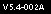

Release Notes: GT.M 5.4-002B
Copyright © 2011 Fidelity National Information Services, Inc.
Legal Notice
Copyright © 2011 Fidelity Information Services, Inc. All Rights Reserved
Permission is granted to copy, distribute and/or modify this document under the terms of the GNU Free Documentation License, Version 1.3 or any later version published by the Free Software Foundation; with no Invariant Sections, no Front-Cover Texts and no Back-Cover Texts.
GT.M™ is a trademark of Fidelity Information Services, Inc. Other trademarks are the property of their respective owners.
This document contains a description of GT.M and the operating instructions pertaining to the various functions that comprise the system. This document does not contain any commitment of FIS. FIS believes the information in this publication is accurate as of its publication date; such information is subject to change without notice. FIS is not responsible for any errors or defects.
November 29, 2011
| Revision History | ||
|---|---|---|
| Revision 1.8 | November 29, 2011 |
|
| Revision 1.7 | November 07, 2011 | In C9K05-003269, corrected the description of ZTRIGGER and multi-line trigger -xecute example. |
| Revision 1.6 | August 17, 2011 |
|
| Revision 1.5 | July 25, 2011 | Added an entry for C9L04-003409. |
| Revision 1.4 | July 19, 2011 |
|
| Revision 1.3 | June 9, 2011 |
|
| Revision 1.2 | May 3, 2011 |
|
| Revision 1.1 | March 21, 2011 | Improved the description of C9H02-002826. |
| Revision 1.0 | March 16, 2011 | First published version. |
Contact Information
|
GT.M Group
|
GT.M Support for customers: +1 (610) 578-4226 /
|
Table of Contents
- Conventions
- Release Overview
- Change History
- M-Database Access
- M-Other Than Database Access
- Utilities-MUPIP
- Utilities-Other Than MUPIP
- Error Messages
- BOOLSIDEFFECT
- DBBADUPGRDSTATEM
- DBMISALIGN
- DBSHMNAMEDIFF
- DEVICEWRITEONLY
- DZTRIGINTRIG
- FORCTRLINDX
- GBLEXPECTED
- GTMSECSHRCHDIRF
- GVZTRIGFAIL
- ICUERROR
- JNLFILEDUP
- JNLTPNEST
- REPLJNLCNFLCT
- REPLNOXENDIAN
- REPLNOMULTILINETRG 
- REPLXENDIANFAIL
- SECNODZTRIGINTP
- SETINSETTRIGONLY
- SHMREMOVED
- SSFILOPERR
- TPLOCKRESTMAX
- TRESTMAX
- TRIGMODINTP
- TRIGNAMBAD
- TRIGNAMENF
- TRIGZBREAKREM
- WRITEWAITPID
- ZCCLNUPRTNMISNG
- ZCINVALIDKEYWORD
- ZGOCALLOUTIN
- ZGOTOINVLVL2
Command Syntax: UNIX syntax (that is, lowercase text and "-" for flags/qualifiers) is used throughout this document. OpenVMS accepts both lowercase and uppercase text; flags/qualifiers on OpenVMS should be preceded with "/" rather than a "-".
Program Names: When referring to a GT.M program or function, the reference is in upper case, for example, MUPIP BACKUP. When a specific example is provided, the lower case UNIX command names are used, for example, mupip backup -database ACN,HIST /backup
Reference Number: Reference numbers used to track software enhancements and customer support requests appear in parentheses ().
Platform Identifier: If a new feature or software enhancement does not apply to all platforms, the relevant platform or platforms appear in brackets [].
In GT.M documentation, we're adopting the terms "originating instance" where we previously used "primary instance" or "originating primary instance," and the term "replicating instance" where we previously used "secondary instance" and "originating secondary instance." Since it is easier to change documentation than it is to change software, and given our tradition of maintaining compatibility especially for existing programs and scripts, the former terms will remain in the software for a long time to come, even as they are supplemented with the new terms in the code, and replaced in the documentation.
GT.M runs on a wide variety of UNIX/Linux implementations as well as OpenVMS. Consult FIS for currently supported versions. Each GT.M release is extensively tested by FIS on a set of specific versions of operating systems on specific hardware architectures (the combination of operating system and hardware architecture is referred to as a platform). This set of specific versions is considered Supported. There will be other versions of the same operating systems on which a GT.M release may not have been tested, but on which the FIS GT.M support team knows of no reason why GT.M would not work. This larger set of versions is considered Supportable. There is an even larger set of platforms on which GT.M may well run satisfactorily, but where the FIS GT.M team lacks the knowledge to determine whether GT.M is Supportable. These are considered Unsupported. Contact FIS GT.M Support with inquiries about your preferred platform.
GT.M V5.4-002B provides timely remediation of some additional issues with V5.4-002 and V5.4-002A (highlighted as ).
GT.M V5.4-002A provides timely remediation of some issues with V5.4-002 (highlighted as ).
GT.M V5.4-002 brings performance and scalability enhancements to GT.M:
The previous implementation of local variables has been replaced by one that scales well to large numbers of nodes at a given subscript level. FIS has internally validated its scalability to over one million nodes and also validated that it preserves or even slightly improves upon GT.M's traditional fast performance for local variables with smaller numbers of nodes.
On 64-bit editions of GT.M, the previous per-region limits of 65,536 global buffers and 2GB shared segment size are no longer limited by GT.M; of course, they remain limited by your actual computing platform.
There are important enhancements to the trigger facility:
Trigger -xecute commands can span multiple lines.
The new ZTRIGGER command allows a trigger to be explicitly invoked under program control.
$ZTNAME replaces the deprecated $ZTCODE in the trigger signature.
The use of $ZTRIGGER() within a TP transaction allows trigger logic to be updated atomically within a transaction. Some restrictions apply.
An "unlink all" capability for UNIX platforms allows a process to disassociate itself from all routines that it has linked, release memory, and continue execution with a new entryref at the top of the stack; local variables and IO devices are preserved across the transition.
A new option generates code to evaluate elements of Boolean expressions in an alternative order that ensures expresion components with side effects evluated before the Boolena evaluation as an alternative to GT.M's default behavior which stops the evaluation of Boolean expressions once the final outcome is determined.
Please refer to the description of C9K09-003324 for changes to the configure script used to install GT.M.
V5.4-002 contains numerous fixes, remedied mis-features, and smaller enhancements. For a comprehensive list, refer to Change History.
Over time, computing platforms evolve. Vendors obsolete hardware architectures. New versions of operating systems replace old ones. We at FIS continually evaluate platforms and versions of platforms that should be Supported for GT.M. In the table below, we document not only the ones that are currently Supported for this release, but also alert you to our future plans given the evolution of computing platforms. If you are an FIS customer, and these plans would cause you hardship, please contact your FIS account executive promptly to discuss your needs.
As of the publication date, FIS supports this release on the following hardware and operating system versions. Contact FIS for a current list of supported platforms.
|
Platform |
Supported Versions |
Notes | |||
|---|---|---|---|---|---|
|
Hewlett-Packard Integrity IA64 HP-UX |
11V3 (11.31) |
- | |||
|
IA64 GNU/Linux - Red Hat Enterprise Linux |
Red Hat Enterprise Linux 5.6 |
GT.M should also run on recent releases of other major Linux distributions with a contemporary 2.6 Linux kernel, glibc (version 2.5-24 or later) and ncurses (version 5.5-24 or later). FIS has verified that GT.M passes comprehensive testing on RHEL 5.x on machines that have single cells (no more than 8 CPUs). Multi-cell machines are not considered suitable for production use until they are certified. Although this platform remains at present fully supported, the announcement that it will not be supported by Red Hat Enterprise Linux 6 makes it likely that future GT.M releases will not be supported on this platform. Please contact your FIS account manager if you need ongoing support for GT.M on this platform. | |||
|
Hewlett-Packard PA-RISC HP-UX |
11.11 |
GT.M supports UTF-8 mode and M mode on this platform subject to the following:
Running GT.M on HP-UX 11i requires that patch PHKL_28475 be applied to the system. This patch fixes a problem with the lseek64() C library call that GT.M uses. A system without this patch gives fairly consistent database errors of varying types, structural damage, and in general does not work correctly for any but the most simplistic usage. The swlist -p command (executed as root) can be used to determine if this patch has been applied. Since recent "BATCH" and "GOLDEN" patches may contain this patch, your system may already have this patch applied but may not list it separately. Contact your HP support channel for more information. GT.M does not support database encryption on this platform. GT.M does not support the Memory Mapped (MM) Access Method on this platform. Although this platform remains at present fully supported with respect to bug fixes, owing to its looming sunset by HP, new functionality is supported on this platform only for FIS' convenience. It is likely that future GT.M releases will not be supported on this platform. Please contact your FIS account manager if you need ongoing support for GT.M on this platform. | |||
|
Hewlett-Packard Alpha/AXP Tru64 UNIX |
5.1B |
GT.M supports M mode but not UTF-8 mode on this platform. GT.M does not support database encryption on this platform. Although this platform remains at present fully supported with respect to bug fixes, owing to its looming sunset by HP, new functionality is supported on this platform only for FIS' convenience. It is likely that future GT.M releases will not be supported on this platform. Please contact your FIS account manager if you need ongoing support for GT.M on this platform. | |||
|
Hewlett-Packard Alpha/AXP OpenVMS |
7.3-1 / 7.3-2 / 8.2 / 8.3 |
GT.M supports M mode but not UTF-8 mode on this platform. GT.M does not support several recent enhancements on this platform, including but not limited to database encryption, on-line backup, multi-site replication, PIPE devices and triggers. If you need to work with external calls written in C with Version 6.x of the C compiler on Alpha OpenVMS, then you must carefully review all the provided kits for that product and apply them appropriately. Although this platform remains at present fully supported with respect to bug fixes, owing to its looming sunset by HP, new functionality is supported on this platform only for FIS' convenience. Future GT.M releases may not be supported on this platform. Regardless of ongoing plans for support of the OpenVMS platform itself, the next GT.M release will likely no longer support OpenVMS 7.x. Please contact your FIS account manager if you need ongoing support for GT.M on this platform.. | |||
|
IBM System p AIX |
5.3, 6.1 |
Since GT.M processes are 64-bit, FIS expects 64-bit AIX configurations to be preferable.
FIS may discontinue support for GT.M on AIX 5.x from the next release. Please contact your FIS account manager if you need ongoing support for GT.M on AIX 5.x. AIX 6 will remain supported. In the future, we anticipate AIX 7 being Supported. Meanwhile, we consider AIX 7 to be Supportable in that we know of no reason that GT.M will not run on it if APAR: POW() function fix (IZ87564) has been applied to AIX. | |||
|
GNU/Linux on IBM System z |
SuSE Linux Enterprise Server 10.3 and 11 or later |
GT.M support starts at SuSE Linux Enterprise Server 10 Service Pack 3. On SuSE Linux Enterprise Server 11 or later, we require the installation of the SuSE provided libelf0-0.8.10-37.10, or later, package. Future GT.M releases are likely to no longer support SLES 10 and to support only SLES 11. | |||
|
IBM System z z/OS |
V1R11 |
- | |||
|
Sun SPARC Solaris |
9 (Update 3 and above) and 10 (Update 6 and above) |
GT.M supports the deprecated DAL calls in M mode but not in UTF-8 mode. Please refer to the Integrating External Routines chapter in the Programmer's Guide for appropriate alternatives. | |||
|
x86_64 GNU/Linux |
Red Hat Enterprise Linux 5.6; Ubuntu 8.04 LTS through 10.10; SuSE Linux Enterprise Server 11 |
To run 64-bit GT.M processes requires both a 64-bit kernel as well as 64-bit hardware. GT.M should also run on recent releases of other major Linux distributions with a contemporary 2.6 Linux kernel, glibc (version 2.5-24 or later) and ncurses (version 5.5 or later). To install GT.M with Unicode (UTF-8) support on RHEL 5.4, in response to the installation question Future GT.M releases may no longer support Red Hat Enterprise Linux 5.x. Please contact your FIS account manager if you need ongoing support for GT.M on RHEL 5.x. We anticipate support for RHEL 6 in the future. | |||
|
x86 GNU/Linux |
Red Hat Enterprise Linux 5.5 |
This 32-bit version of GT.M runs on either 32- or 64-bit x86 platforms; we expect the X86_64 GNU/Linux version of GT.M to be preferable on 64-bit hardware. GT.M should also run on recent releases of other major Linux distributions with a contemporary 2.6 Linux kernel, glibc (version 2.5-49 or later) and ncurses (version 5.5-24 or later). The minimum CPU must have the instruction set of a 686 (Pentium Pro) or equivalent. Future GT.M releases may no longer support Red Hat Enterprise Linux 5.x. Please contact your FIS account manager if you need ongoing support for GT.M on RHEL 5.x. We anticipate support for RHEL 6 in the future. |
FIS usually supports new operating system versions six months after stable releases are available and we usually support each version for a two year window. GT.M releases are also normally supported for two years after release. While FIS will attempt to provide support to customers in good standing for any GT.M release and operating system version, our ability to provide support is diminished after the two year window.
GT.M cannot be patched, and bugs are only fixed in new releases of software.
The same application code runs on both 32-bit and 64-bit platforms. Please note that:
You must compile the application code separately for each platform. Even though the M source code is exactly the same, the generated object modules are different even on the same hardware architecture - the object cde differs between x86 and x86_64.
Parameter-types that interface GT.M with non-M code using C calling conventions must match the data-types on their target platforms. Mostly, these parameters are for call-ins, external calls, internationalization (collation), and environment translation and are listed in the tables below. Note that most addresses on 64-bit platforms are 8 bytes long and require 8 byte alignment in structures whereas all addresses on 32-bit platforms are 4 bytes long and require 4-byte alignment in structures.
|
Parameter type |
32-Bit |
64-bit |
Remarks |
|---|---|---|---|
|
gtm_long_t |
4-byte (32-bit) |
8-byte (64-bit) |
gtm_long_t is much the same as the C language long type, except on Tru64 UNIX, where GT.M remains a 32-bit application. |
|
gtm_ulong_t |
4-byte |
8-byte |
gtm_ulong_t is much the same as the C language unsigned long type. |
|
gtm_int_t |
4-byte |
4-byte |
gtm_int_t has 32-bit length on all platforms. |
|
gtm_uint_t |
4-byte |
4-byte |
gtm_uint_t has 32-bit length on all platforms |
![[Caution]](images/caution.jpg) | |
If your interface uses gtm_long_t or gtm_ulong_t types but your interface code uses int or signed int types, failure to revise the types so they match on a 64-bit platform will cause the code to fail in unpleasant, potentially dangerous and hard to diagnose ways. |
|
Parameter type |
32-Bit |
64-bit |
Remarks |
|---|---|---|---|
|
gtm_descriptor in gtm_descript.h |
4-byte |
8-byte |
Although it is only the address within these types that changes, the structures may grow by up to 8 bytes as a result of compiler padding to meet platform alignment requirements. |
![[Important]](images/important.jpg) | |
Assuming other aspects of their code are 64-bit capable, collation routines should require only recompilation. |
|
Parameter type |
32-Bit |
64-bit |
Remarks |
|
gtm_string_t type in gtmxc_types.h |
4-byte |
8-byte |
Although it is only the address within these types that changes, the structures may grow by up to 8 bytes as a result of compiler padding to meet platform alignment requirements. |
| |
Assuming other aspects of their code are 64-bit capable, environment translation routines should require only recompilation. |
Rebuild all Shared Libraries (UNIX) or Shareable Executable Images (OpenVMS) after recompiling all M and C source files.
To install GT.M, see the "Installing GT.M" section in the GT.M Administration and Operations Guide. For minimal down time upgrade a current replicating instance, restart replication, once it is current switch it over to originating instance and up grade the prior originating instance to become a replicating instance, at least until it's current.
FIS strongly recommends installing each version of GT.M in a separate (new) directory, rather than overwriting a previously installed version. If you must overwrite an existing GT.M installation with a new version, you must first shut down all processes using the old version. FIS suggests installing GT.M V5.4-002B in a Filesystem Hierarchy Standard compliant location such as
/usr/lib/fis-gtm/V5.4-002B_arch(for example,/usr/lib/fis-gtm/V5.4-002B_x86) on 32-bit Linux systems. A location such as/opt/fis-gtm/V5.4-002B_archwould also be appropriate. Note that thearchsuffix is especially important if you plan to install 32- and 64-bit versions of the same release of GT.M on the same system.Use the MUPIP RUNDOWN command of the old GT.M version to ensure all database files are cleanly closed.
In UNIX editions, make sure gtmsecshr is not running. If gtmsecshr is running, first stop all GT.M processes including the DSE, LKE and MUPIP utilities and then perform a
MUPIP STOPpid_of_gtmsecshr.
| |
Never replace the binary image on disk of any executable file while it is in use by an active process. It may lead to unpredictable results. Depending on the operating system, these results include but are not limited to denial of service (that is, system lockup) and damage to files that these processes have open (that is, database structural damage). |
GT.M for IBM pSeries AIX requires the Asynchronous IO facility to be available and configured. AIX 6 manages AIO dynamically (as requested by the application). Before installing GT.M on IBM pSeries AIX versions prior to AIX 6, run the following command to check the filesets of this facility: lslpp l bos.rte.aio
If there are no filesets, then install them from AIX installation media. Then, use SMIT to configure the Asynchronous IO facility. Use SMIT as follows:
smit aio(for gui mode) orsmitty aio(for text mode)
For a system that has the "posixaio" option instead of "aio" (also called "legacy aio"), use SMIT as follows:
smit posixaio(for gui mode) orsmitty posixaio(for text mode)
Select "Configure AIO now". If you see a message such as "aio0 has been created", it means that there is no further need of setup at this time.
In addition to configuring the aio0 device, select "Change/Show characteristics of Asynchronous I/O" and change the value of "State to be configured at system restart" from "defined" to "available". This ensures that the aio0 device will be available when you next reboot the system.
If you expect a database file or journal file to exceed 2GB with older versions of the JFS file system, then you must configure its file system to permit files larger than 2GB. Furthermore, should you choose to place journal files on file systems with a 2GB limit, since GT.M journal files can grow to a maximum size of 4GB, you must then set the journal auto switch limit to less than 2 GB.
![[Note]](images/note.jpg) | |
The gtm_icu_minorver environment variable previously used to specify an ICU minor version to access ICU is now ignored. You can safely let it remain in shell scripts that are designed to be be used across multiple GT.M versions. If you need to specify an ICU version that GT.M should use for Unicode operations, set the environment variable gtm_icu_version. |
To upgrade from a GT.M version prior to V4.3-001, you must update any customized copy of GTM$DEFAULTS to include a definition for GTM$ZDATE_FORM.
You can ignore the following section if you choose the standard GT.M configuration or answer yes to the following question:
Do you want to define GT.M commands to the system
If you define GT.M commands locally with SET COMMAND GTM$DIST:GTMCOMMANDS.CLD in GTMLOGIN.COM or other command file for each process which uses GT.M, you must execute the same command after installing the new version of GT.M before using it. If you define the GT.M commands to the system other than during the installation of GT.M, you must update the system DCLTABLES with the new GTMCOMMANDS.CLD provided with this version of GT.M. See the OpenVMS "Command Definition, Librarian, and Message Utilities Manual" section on "Adding a system command." In both cases, all GT.M processes must match the proper GTMCOMMANDS.CLD with the version of GT.M they run.
The GT.M database consists of four types of components- database files, journal files, global directories, and replication instance files. The format of each database component may differ for each GT.M version and even between 32-bit and 64-bit GT.M releases for the same hardware architecture and operating system.
GT.M upgrade procedure for V5.4-002B consists of 4 stages:
Read the upgrade instructions of each stage carefully. Your upgrade procedure for GT.M V5.4-002B depends on your GT.M upgrade history and your current version.
FIS strongly recommends you make a copy of your Global Directory before upgrading it. There is no single-step way to downgrade a Global Directory to an earlier format.
To upgrade from any prior GT.M version:
Open your Global Directory with the GDE utility program from GT.M V5.4-002B.
Run the EXIT command. This command automatically, even with no other intervening commands, upgrades the Global Directory.
To upgrade from a 32-bit GT.M to a 64-bit GT.M having the same or different release number:
Open your Global Directory with the GDE utility program on the 32-bit platform.
On GT.M versions that support it, execute the SHOW -COMMAND -FILE=<file-name>. The command file file-name now holds the current Global Directory settings.
On GT.M versions that don't support GDE SHOW -COMMAND, use SHOW -ALL and either edit the result into an appropriate command file or use them to guide you in manually reentering the information into GDE.
Open GDE on the 64-bit platform. If you have a command file from 2. or 3., execute @<file-name> and then run the EXIT command. These commands automatically recreate the Global Directory. Otherwise use the GDE output from the old global directory to replicate the configuration in the new environment.
The same procedure applies for upgrading the Global Directory from a 64-bit GT.M to a 32-bit GT.M.
If you inadvertently open a global directory in an earlier format, with no intention of upgrading it, execute the QUIT command rather than the EXIT command.
If you inadvertently upgrade a global directory, perform the following steps:
Open the global directory with GDE from V5.4-002B.
Execute the SHOW -COMMAND -FILE=<file-name> command to create a command file to use to recreate the global directory on the older version. If the old version is significantly out-of-date, you may need to edit the command file to remove text that only applies to more recent versions. Alternatively you can use the output from SHOW -ALL or SHOW -COMMAND as a guide to manually reestablish the Global Directory for the older version.
You need to upgrade your database files only when there is a block format upgrade (such as V4->V5). However, some versions, for example, the ones which have been initially been created with V4 (and subsequently upgraded to a V5 format) may additionally need a MUPIP REORG -UPGRADE operation to upgrade previously used but free blocks that may have been missed by earlier upgrade tools.
To upgrade from a GT.M version prior to V5.000:
Upgrade your database files using in-place or traditional database upgrade procedure depending on your situation. For more information on in-place/traditional database upgrade, see Database Migration Technical Bulletin.
Run the MUPIP REORG -UPGRADE command. This command upgrades all V4 blocks to V5 format.
| |
Databases created with GT.M releases prior to V5.0-000 and upgraded to a V5 format retain a maximum size limit of 64M (67,108,864) blocks. |
To upgrade from GT.M V5.0*/V5.1*/V5.2*/V5.3*/V5.4*:
No database file upgrade procedure is necessary if you upgrade from GT.M V5.0-000 or later to V5.3-000 or later. However, you may need to run the MUPIP REORG -UPGRADE command to upgrade any previously used but free blocks that may have been missed during earlier upgrade cycles. You do not need to run MUPIP REORG -UPGRADE in either of the following situations:
A database was created by a V5 MUPIP CREATE
A database has previously been completely processed by a MUPIP REORG -UPGRADE from V5.3-003 or later
If you have already run the MUPIP REORG -UPGRADE command in a version prior to V5.3-003, subsequent versions cannot determine whether or not it was done correctly and records warnings in the operator log for running MUPIP REORG -UPGRADE. Therefore, you must either:
Run the MUPIP REORG -UPGRADE command again
Run the DSE CHANGE -FULLY_UPGRADED=1 command to stop the warnings
| |
Do not run the DSE CHANGE -FILEHEADER -FULLY_UPGRADED=1 command unless you are absolutely certain you have previously successfully run to completion MUPIP REORG -UPGRADE from V5.3-003 or later. Using this command inappropriately may lead to database integrity issues. |
For additional upgrade considerations, refer to Database Compatibility Notes.
| |
If your application code uses triggers, when upgrading to V5.4-002B from an earlier version, triggers must be extracted from the database and deleted therein using the prior GT.M version, and the loaded with the new GT.M version. Refer to the description of C9K05-003269 for more information. |
Changes to the database file header may occur in any release. GT.M automatically upgrades database file headers as needed. Any changes to database file headers are upward and downward compatible within a major database release number, that is, although processes from only one GT.M release can access a database file at any given time, processes running different GT.M releases with the same major release number can access a database file at different times.
Databases created with V5.3-004 and later can grow to a maximum size of 224M (234,881,024) blocks. This means, for example, that with an 8KB block size, the maximum database file size is 1,792GB; this is effectively the size of a single global variable that has a region to itself; a database consists of any number of global variables. A database created with GT.M versions V5.0-000 through V5.3-003 can be upgraded with MUPIP UPGRADE to increase the limit on database file size from 128M to 224M blocks.
Databases created with V5.0-000 through V5.3-003 have a maximum size of 128M (134,217,728) blocks. GT.M versions V5.0-000 through V5.3-003 can access databases created with V5.3-004 and later as long as they remain within a 128M block limit.
If you are running a logical multi-site (LMS) application configuration on a UNIX platform, then you need to recreate the replication instance file using the MUPIP REPLICATE -INSTANCE_CREATE command whenever your upgrade changes GT.M from a 32-bit implementation to a 64-bit implementation (or potentially vice versa on the x86 platform). If your upgrade does not include a change between a 32- and 64-bit implementation then you do not need to recreate the replication instance file. For example, on Linux systems, you do not have to recreate the replication instance file if you upgrade from 32-bit pre V5.3-001 to 32-bit V5.3-001 or later. You have to recreate the replication instance file only for the upgrade scenarios below.
| |
When upgrading from a 32-bit GT.M version to a 64-bit GT.M version you always need to recreate the replication instance files. This includes upgrades from V5.3-000 or versions prior to GT.M V5.3-001 or later on AIX or 64-bit Linux and upgrades from V5.3-001 or prior versions to GT.M V5.3-002 or later on Solaris. After creating new replication instance files, always start replication with the -UPDATERESYNC qualifier. Using pre-existing instance files (as opposed to creating new instance files) could cause any process that reads the instance file (which includes the Source Server, Receiver Server, update process and GT.M processes on an originating instance) to abnormally terminate with errors ranging from REPLINSTSECMTCH to a segmentation violation (SIG-11), which creates a core file. |
In the following three scenarios, your Source Server process terminates abnormally if you do not recreate the replication instance file:
On AIX systems, if you upgrade from 32-bit pre-V5.3-001 to 64-bit V5.3-001 or later
On Linux systems, if you upgrade from a 32-bit pre-V5.3-001 to 64-bit V5.3-001 or later or from a 64-bit release to a newer 32-bit release
On Sun SPARC Solaris, if you upgrade from 32-bit pre-V5.3-003 to 64-bit V5.3-003 or later
In these cases, shut down all Receiver Servers on other instances looking for updates from this instance, shut down this instance, recreate the instance file and then restart the Receiver Server on this instance with the -UPDATERESYNC qualifier.
| |
Without the UPDATERESYNC qualifier, the replicating instance synchronizes with the originating instance using state information from both instances and potentially rolling back information on the replicating instance. The UPDATERESYNC qualifier declares the replicating instance to be in a wholesome state matching some prior (or current) state of the originating instance; it causes MUPIP to update the information in the replication instance file of the originating instance and not modify information currently in the database on the replicating instance. After this command, the replicating instance catches up to the originating instance starting from its own current state. Use UPDATERESYNC only when you are absolutely certain that the replicating instance database was shut down normally with no errors, or appropriately copied from another instance with no errors. |
| |
You must always follow the steps in the Multi-Site Replication technical bulletin when migrating from a logical dual site (LDS) configuration to an LMS configuration, even if you are not changing GT.M releases. |
On every GT.M upgrade:
Create a fresh backup of your database.
Generate new journal files (without back-links).
| |
This is necessary because MUPIP cannot use journal files from a release other than its own for RECOVER or ROLLBACK. |
Multi-line xecutes for triggers necessitated a change in the internal storage for triggers, rendering triggers created in V5.4-000/V5.4-000A/V5.4-001 incompatible with V5.4-002/V5.4-002A/V5.4-002B. If you are using triggers and upgrading from V5.4-000/V5.4-000A/V5.4-001, you must reapply the trigger definitions using $ZTRIGGER() or MUPIP TRIGGER.
To reapply the trigger definitions on V5.4-002B using MUPIP TRIGGER:
Execute a command like mupip trigger -select="*" trigger_defs.org. The output file trigger_defs.trg now holds all trigger definitions.
Place -* at the beginning of the trigger_defs file to remove the old trigger definitions before reapplying them.
Run mupip trigger -triggerfile=trigger_defs to reapply your trigger definitions.
On selected platforms, with International Components for Unicode (ICU) version 3.6 or later installed, GT.M's UTF-8 mode provides support for Unicode (ISO/IEC-10646) character strings. On other platforms, or on a system that does not have ICU 3.6 or later installed, GT.M only supports M mode.
On a system that has ICU installed, GT.M optionally installs support for both M mode and UTF-8 mode, including a utf8 subdirectory of the directory where GT.M is installed. From the same source file, depending upon the value of the environment variable $gtm_chset, the GT.M compiler generates an object file either for M mode or UTF-8 mode. GT.M generates a new object file when it finds both a source and an object file, and the object predates the source file and was generated with the same setting of $gtm_chset/$ZCHset. A GT.M process triggers an error if it encounters an object file generated with a different setting of $gtm_chset/$ZCHset than that processes' current value.
Always generate an M object module with a value of $gtm_chset/$ZCHset matching the value processes executing that module will have. As the GT.M installation itself contains utility programs written in M, their object files also conform to this rule. In order to use utility programs in both M mode and UTF-8 mode, the GT.M installation ensures that both M and UTF-8 versions of object modules exist, the latter in the utf8 subdirectory. This technique of segregating the object modules by their compilation mode prevents both frequent recompiles and errors in installations where both modes are in use. If your installation uses both modes, consider a similar pattern for structuring application object code repositories.
GT.M is installed in a parent directory and a utf8 subdirectory as follows:
Actual files for GT.M executable programs (mumps, mupip, dse, lke, and so on) are in the parent directory, that is, the location specified for installation.
Object files for programs written in M (GDE, utilities) have two versions - one compiled with support for Unicode in the utf8 subdirectory, and one compiled without support for Unicode in the parent directory. Installing GT.M generates both the versions of object files, as long as ICU 3.6 or greater is installed and visible to GT.M when GT.M is installed, and the option to install Unicode support is chosen.
The utf8 subdirectory has files called mumps, mupip, dse, lke, and so on, which are relative symbolic links to the executables in the parent directory (for example, mumps is the symbolic link ../mumps).
When a shell process sources the shell scripts gtmprofile or gtmcshrc, the behavior is as follows:
If $gtm_chset is "m", "M" or undefined, there is no change from the previous GT.M versions to the value of the environment variable $gtmroutines.
If $gtm_chset is "UTF-8" (the check is case-insensitive),
$gtm_dist is set to the utf8 subdirectory (that is, if GT.M is installed in /usr/lib/fis-gtm/gtm_V5.4-002B_i686, then gtmprofile and gtmcshrc set $gtm_dist to /usr/lib/fis-gtm/gtm_V5.4-002B_i686/utf8).
The last element of $gtmroutines is $gtm_dist($gtm_dist/..) so that the source files in the parent directory for utility programs are matched with object files in the utf8 subdirectory.
For more information on gtmprofile and gtmcshrc, refer to the Basic Operations chapter of UNIX Administration and Operations Guide.
GT.M versions prior to V5.3-004 require exactly ICU 3.6, however, V5.3-004 (or later) accept ICU 3.6 or later. For sample instructions to download ICU, configure it not to use multi-threading, and compiling it for various platforms, refer to Appendix C: Compiling ICU on GT.M supported platforms of the UNIX Administration and Operations Guide.
Although GT.M can use ICU, ICU is not FIS software and FIS does not support ICU. The sample instructions for installing and configuring ICU are merely provided as a convenience to you.
Also, note that download sites, versions of compilers, and milli and micro releases of ICU may have changed ICU since the embedded dates when these instructions were tested making them out-of-date. Therefore, these instructions must be considered examples, not a cookbook.
The environment variable $TERM must specify a terminfo entry that accurately matches the terminal (or terminal emulator) settings. Refer to the terminfo man pages for more information on the terminal settings of the platform where GT.M needs to run.
Some terminfo entries may seem to work properly but fail to recognize function key sequences or position the cursor properly in response to escape sequences from GT.M. GT.M itself does not have any knowledge of specific terminal control characteristics. Therefore, it is important to specify the right terminfo entry to let GT.M communicate correctly with the terminal. You may need to add new terminfo entries depending on their specific platform and implementation. The terminal (emulator) vendor may also be able to help.
GT.M uses the following terminfo capabilities. The full variable name is followed by the capname in parenthesis:
auto_right_margin(am), clr_eos(ed), clr_eol(el), columns(cols), cursor_address(cup), cursor_down(cud1),cursor_left(cub1), cursor_right(cuf1), cursor_up(cuu1), eat_newline_glitch(xenl), key_backspace(kbs), key_dc(kdch1),key_down(kcud1), key_left(kcub1), key_right(kcuf1), key_up(kcuu1), key_insert(kich1), keypad_local(rmkx),keypad_xmit(smkx), lines(lines).
GT.M sends keypad_xmit before terminal reads for direct mode and READs (other than READ *) if EDITING is enabled. GT.M sends keypad_local after these terminal reads.
If you plan to use the optional compression facility for replication, you must provide the compression library. The GT.M interface for compression libraries accepts the zlib compression libraries without any need for adaptation. These libraries are included in many UNIX distributions and are downloadable from the zlib home page. If you prefer to use other compression libraries, you need to configure or adapt them to provide the same API provided by zlib. Simple instructions for compiling zlib on a number of platforms follow. Although GT.M can use zlib, zlib is not FIS software and FIS does not support zlib. These instructions are merely provided as a convenience to you.
If a package for zlib is available with your operating system, FIS suggests that you use it rather than building your own.
Solaris/cc compiler from Sun Studio:
./configure --sharedmake CFLAGS="-KPIC -m64"
HP-UX(IA64)/HP C compiler:
./configure --sharedmake CFLAGS="+DD64"
AIX/XL compiler:
./configure --sharedAdd -q64 to the LDFLAGS line of the Makefilemake CFLAGS="-q64"
Linux/gcc:
./configure --sharedmake CFLAGS="-m64"
z/OS:
Refer to the steps FIS used to install zlib on z/OS in the GT.M for z/OS technical bulletin.
By default, GT.M searches for the libz.so shared library (libz.sl on HPUX PA-RISC) in the standard system library directories (for example, /usr/lib, /usr/local/lib, /usr/local/lib64). If the shared library is installed in a non-standard location, before starting replication, you must ensure that the environment variable $LIBPATH (AIX and z/OS) or $LD_LIBRARY_PATH (other UNIX platforms) includes the directory containung the library. The source and Receiver Server link the shared library at runtime. If this fails for any reason (such as file not found, or insufficient authorization), the replication logic logs a DLLNOOPEN error and continues with no compression.
Fixes and enhancements specific to V5.4-002B are:
|
CR# |
Category |
Summary |
|---|---|---|
|
MUPIP |
Enhance MUPIP RUNDOWN operations. | |
|
MUPIP |
Do not allow backward recovery if the database and its journal files are not in sync. | |
|
MUPIP |
New environment variable gtm_jnl_release_timeout for the Source Server. | |
|
MUMPS |
$QSUBSCRIPT() and $QLENGTH() accept non-standard extended references | |
|
MUMPS |
More robust handling of job interrupts inside of a TP transaction. | |
|
DB |
GT.M issues a TRANS2BIG error for every attempt to access more than 64K blocks within the same transaction | |
|
MUMPS |
$QSUBSCRIPT() returns a correct value when the selected subscript is exactly 0. | |
|
MUMPS |
ICU issues should not cause a GTMASSERT | |
|
MUMPS |
M-profiling works with triggers and call-ins. | |
|
DB |
Improved reporting of improperly shutdown databases. | |
|
MUPIP |
Prevent using duplicate journal files in forward recoveryreport reading errors for utility programs looking for an interactive YES/NO. | |
|
MUMPS |
Device changes primarily for, but not restricted to, z/OS FIFO devices. | |
|
MUMPS |
FOR accepts a subscripted control variable in all circumstances. | |
|
MUPIP |
RESTORE does not clear the encryption state | |
|
DB |
Improved handling of runtime errors for SET or $INCREMENT(). | |
|
MUMPS |
Improved time reporting in the M-profiling of large M programs with extensive routine invocations and tracks nested invocations. | |
|
Utilities |
gtminstall script handles letter suffix releases. | |
|
Utilities |
Command line processing in utilities (like DSE, LKE, MUPIP) handles empty user responses robustly. | |
|
DB |
After a GVSUBOFLOW error, a GVIS message with a * at the end of the global variable node indicates a truncated key. | |
|
DB |
NOBEFORE_IMAGE journaling avoids a potentially time consuming action that has no value to its successful operation. | |
|
MUPIP |
Replication logs files contain more information about errors in the shutdown of Receiver Server or Update Process. | |
|
DB |
Protect buffer management windows against aggressive instruction reordering |
These fixes are marked with in the subsequent sections.
Fixes and enhancements specific to V5.4-002A are:
|
CR# |
Category |
Summary |
|---|---|---|
|
MUMPS |
More consistent M-profiling | |
|
MUMPS |
Eliminate unnecessary FULLBOOLWARN warnings | |
|
MUPIP |
Avoid a possible hang on startup after killing a Receiver Server | |
|
MUMPS |
More robust handling of MUPIP INTRPT | |
|
Utilities |
Improved signal handling for all GT.M utilities | |
|
DB |
Fixed out-of-order timestamps in journal records when system time goes back by a second or two | |
|
MUPIP |
Rollback operations consume less memory while checking for transaction consistency | |
|
DB |
Database access from $ETRAP during the "final" retry of a TP transaction | |
|
MUPIP |
MUPIP BACKUP supports a destination-list as long as the platform can support | |
|
MUMPS |
New ZHALT command to return status | |
|
MUMPS |
Improved object code management for ZBREAK actions | |
|
Utilities |
DSE CHANGE -BLOCK -TN for encrypted, but unjournaled database. | |
|
DB |
VIEW "NOISOLATION" interaction with mismatched key lengths | |
|
DB |
MERGE gvn=glvn sets $REFERENCE to gvn even if 0=$DATA() | |
|
MUPIP |
Source Server will not send a trigger that cannot work on an older version | |
|
MUMPS |
KILL * corrections |
These fixes are marked with in the subsequent sections.
Fixes and enhancements specific to V5.4-002 are:
|
CR# |
Category |
Summary |
|---|---|---|
|
MUMPS |
Fix ZGOTO handling of unusual entryref situations; treat negative levels as $zlevel-intexpr | |
|
MUMPS |
See C9H02-002826. | |
|
DB |
Ensure a journal file is fully initialized before making it the current journal file | |
|
DB |
Ensure a process termination cannot cause an incomplete UNIX database file extension | |
|
MUPIP |
Enhance the UNIX BACKUP -REPLACE to work for explicitly specified destination files | |
|
MUPIP |
Improve I/O handling of UNIX journal files by MUPIP RECOVER and ROLLBACK | |
|
MUMPS |
See C9H02-002826. | |
|
MUPIP |
Improve diagnostic information for replication connection problems | |
|
MUMPS |
UNIX PIPE and FIFO devices respond to INTRPT while waiting for input | |
|
MUMPS |
Improve the protection for SOCKET device context when responding to an INTRPT | |
|
DB |
Improve database block packing | |
|
DB |
Normalize explicit TRESTART behavior with implicit RESTARTs | |
|
DB |
Perform UNIX database file authorization checking locally to avoid network delays | |
|
MUMPS |
Fix a compilation problem on some platforms with argumentless DO without an explicit QUIT | |
|
Utilities |
Remove an inappropriate file left behind by the UNIX installations script | |
|
MUMPS |
Prevent rare but fatal interaction with some versions of the C run-time library | |
|
DB |
Protect V4 block conversion on processors with aggressive instruction reordering | |
|
DB |
Protect UNIX against database upgrade related issues | |
|
MUPIP |
Display a FILERENAME message when MUPIP REPLICATE -INSTANCE_CREATE encounters a name conflict and add a new -NOREPLACE option. | |
|
MUMPS |
Support for ZWRITE of an ISV | |
|
MUMPS |
Local arrays scale much more gracefully to large numbers of subscripts | |
|
MUMPS |
Issue error for unusual FOR control index construct that could cause process damage | |
|
MUMPS |
Option to prevent short-circuiting of expression elements with side-effects in Boolean evaluations | |
|
DB |
Try to wake a possibly suspended UNIX process holding the journal writing resource | |
|
DB |
In OpenVMS, require an operational recognition of an improperly closed database file | |
|
MUMPS |
Faster interface alternative for UNIX call-ins | |
|
MUPIP |
Improve MUPIP JOURNAL handling of JNLTPNEXT errors | |
|
Utilities |
Correct GDE handling of maximum length names | |
|
MUMPS |
The gtm_exit UNIX call-in cleans up abandoned timers | |
|
MUMPS |
$ZDATE() support of up to six digit years | |
|
MUMPS |
Cleanup various edge-case anomalies in numeric handling | |
|
Utilities |
GDE SHOW -COMMAND produces a command file to recreate the current global directory including encription | |
|
MUMPS |
ZGOTO 0:entryref provides a "fresh start" for routine linkage | |
|
DB |
Remove the 64K limit on BG database buffers | |
|
MUMPS |
Permit an environment variable in the UNIX external call table path | |
|
MUPIP |
Display all 16 characters of the node name from the UNIX instance file | |
|
DB |
Trigger changes and enhancements on UNIX | |
|
MUMPS |
Fix UTF-8 handling of short (less than 3-byte) reads on FIFO and PIPE devices | |
|
DB |
Add optional diagnostic capability in UNIX for certain resource wait conditions | |
|
MUPIP |
Improve MUPIP RUNDOWN handling when UNIX semaphores remain without shared memory | |
|
DB |
Improve resource cleanup after an interrupted UNIX database file open | |
|
Utilities |
Fix locale handling by the UNIX gtmprofile script | |
|
MUPIP |
Fix MUPIP INTEG handling of mixed V4 and V5 database files | |
|
MUPIP |
Ensure MUPIP SET JOURNAL and BACKUP synchronize any new journal files they create | |
|
MUPIP |
Ensure MUPIP STOP does not leave journaling disabled | |
|
Utilities |
Prevent the UNIX profile script from leaving the terminal in an unsatisfactory state | |
|
Utilities |
Improve the UNIX GT.CM OMI handling of over-length environment variables and fix log destination | |
|
MUMPS |
Fix some issues with the UNIX PIPE device | |
|
DB |
Wait for RMS to complete journal file writes before closing them | |
|
Utilities |
Add reserved bytes status to the GDE SHOW -TEMPLATE output | |
|
MUMPS |
Restore lost GTM_FATAL_ERROR* dumps on Linux | |
|
DB |
Ensure that FREEZE prevents all database file extensions | |
|
MUPIP |
Ensure a replacement UNIX instance file is correct before renaming the old file | |
|
MUMPS |
Enable the use of ICU 4.4 for UTF-8 mode on some UNIX platforms where it gave an error | |
|
Utilities |
Fix the configure script handling of GPG-related setup on AIX and HP-UX Itanium | |
|
Utilities |
Improvements to the UNIX configure script | |
|
DB |
Improve diagnostic information for a database update resource wait case | |
|
DB |
Cross-endian conversion deals correctly with more configurations | |
|
DB |
Ensure the UNIX GT.CM GNP server does not lose MUPIP INTRPT requests | |
|
DB |
Protect a particular critical section against inappropriate asynchronous (timer) action on UNIX | |
|
MUMPS |
Improve $ZREALSTOR reporting on certain Linux and Tru64 | |
|
MUMPS |
Fix $QSUSBCRIPT() handling of non-graphic characters mixed with embedded quotes | |
|
DB |
Protect against an unusual journaling situation that could stall UNIX updates for two minutes | |
|
MUPIP |
Improve MUPIP INTEG error report for misaligned database file | |
|
MUMPS |
Provide appropriate error when attempting to return an non-existent alias container | |
|
DB |
Improve the journaling checksum to better detect bad journal records | |
|
Utilities |
Improve non-ASCII character handling of a script in the encryption reference example | |
|
MUPIP |
Improve MUPIP ROLLBACK handling of NULL records | |
|
MUMPS |
Fix possible problem with UNIX JOB STARTUP script invocation | |
|
Utilities |
Improve error reporting when UNIX gtmsecshr has a problem opening its temporary directory | |
|
DB |
Improve error handling for replication communications | |
|
Utilities |
Experimental UNIX installation alternative |
GT.M ensures that a freshly created journal file is properly initialized before making it the current journal file. In previous versions, an interrupted journal file creation could leave an invalid journal as the current file. [UNIX] (S9D12-002400)
GT.M enforces a stateful transition for database file extension, which ensures MUPIP RECOVER and MUPIP ROLLBACK can make a wholesome recovery of any interrupted extension. In previous versions, an interrupted database file extension could result in database damage, even after a recover or rollback. [UNIX] (S9E02-002419)
GT.M packs data into a database block more efficiently. Previously, certain patterns of concurrent updates could result in low data density (which could be corrected by a subsequent MUPIP REORG). With this change, densities are typically higher, dramatically so in some circumstances, and appear never more than 1-2% worse. (S9K05-002773)
A TRESTART command while $TLEVEL is 0 issues the appropriate TLVLZERO error. This fixes a regression introduced in GT.M V5.4-000 that caused such an erroneous TRESTART to abnormally terminate with a segmentation violation (UNIX SIG-11 and OpenVMS ACCVIO) and create core files.
$TRESTART has the values of 0 through 4. In previous versions of GT.M, it started out with 0 and was incremented up to 4 during restarts and stayed there for up to 32K restarts after which it suddenly became -32K and kept getting incremented (-32+1, -32K+2, etc.) for further restarts until it reached -1 and stayed there for all future restarts until the transaction either committed or rolled back.
A TRESTART command causes the TP transaction to RESTART in the same way that GT.M uses to implicitly restart the transaction in case of resource conflicts. All restarts increment the internal transaction retry count to a maximum of three (3), at which point, GT.M performs the entire TP transaction within a critical section on all databases referenced in the transaction. Previous versions used to handle the explicit TRESTART case differently by resetting the transaction retry count to zero (0), while incrementing it for the implicit restart case. If the transaction was in the third retry (the final try) when the TRESTART and the retry count reset occurred, in rare cases the inappropriate reset could cause deadlocks and/or hangs.
GT.M issues a TRESTMAX runtime error when application code attempts a TRESTART more than once during a transaction while $TRESTART=4 (note: in order to be wholesome, TRESTART usage in application code should always be conditional). In the final retry, GT.M holds the critical section lock on all databases involved in the transaction. Since a TRESTART cancels all the work done in the current transaction and transfers control back to the TSTART, limiting the number of times this can be done in the final retry limits the time a process can (by virtue of holding a critical section lock on the databases) prevent other processes from updating the database. Prior GT.M versions used to allow an arbitrary number of TRESTARTs thereby letting an improperly coded TP transaction (using TRESTARTs) take exclusive control of the database for extended periods of time.
ZMESSAGE 150376098, where the error code is the internal GT.M representation for a TPRETRY error, is identical to a TRESTART command. For example, this means that the ZMESSAGE 150376098 generates a TRESTMAX error if it, or a TRESTART or a mix of both is issued more than once while in the final retry of the TP transaction.
GT.M limits TP restarts in the final retry due to non-availability of M-locks in a similar fashion. GT.M allows a maximum of 16 such restarts after which it issues a TPLOCKRESTMAX runtime error. Prior GT.M versions used to allow an arbitrary number of such restarts, thereby permitting live locks - in which an improperly coded application using both transaction processing and M-locks could consume a lot of resources while doing no useful work. FIS recommends implementing database Consistency using transaction processing rather than LOCKs. If you wish to avoid GT.M's use of optimistic concurrency for TP, place the LOCK just before the original TSTART and release it after the final TCOMMIT. (S9K06-002779)
If the user id for a database file is different from that of the process, and configuration has selected access based on group permissions, GT.M uses a more efficient check to determine whether the user id is a member of the group of the database file, eliminating a number of system calls that resulted in poor performance on certain networked systems. [UNIX] (S9K07-002781)
GT.M correctly handles database files containing V4 format blocks. Previously, in rare cases, it could commit a damaged block due to an incomplete conversion from V4 to V5 format. While we are not aware of any such failure in a production system; we detected this issue during validation of the IBM p7 - in theory it could show up in any CPU architecture (including the Power5) that reorders instructions. GT.M enforces the correct instruction execution order in a few additional places where the order is important. While we are not aware of any failures due to potential execution reordering (including on the p7) these changes should prevent possible database damage on newer processors that may use more aggressive out-of-order instruction execution. (S9K10-002787)
GT.M identifies and corrects conflicting values for fields describing database version upgrade state in the file header, and issues a DBBADUPGRDSTATE message to the operator log. Previously, GT.M ignored such a conflict, and as a consequence produced journal files that could not be used for backward recovery. In addition when this condition occurred, MUPIP BACKUP -ONLINE (the default) produced damaged files and MUPIP INTEG -ONLINE (the default) reported spurious integrity errors. If you get this error, you should use MUPIP BACKUP to create a fresh backup and fresh journal files with no back-links and report the circumstances to FIS. [UNIX] (S9K12-002798)
GT.M issues a TRANS2BIG error for every attempt to access more than 64K blocks within the same transaction. Previously a process that ignored the first TRANS2BIG error and tried an additional access of any new block terminated with a segmentation violation (UNIX SIG-11 and OpenVMS ACCVIO). Note that such large transactions can have material performance impact and should be avoided or minimized. If the error handler needs to capture context before any TROLLBACK, after a TRANS2BIG it must place it in a sequential disk file rather than a global.The workaround was to issue a TROLLBACK before doing an additional database access. That TROLLBACK could be incremental if the rolled back sub-transactions had accessed sufficient new blocks to cover the need for post-TRANS2BIG access. (S9L06-002817)
The new local variable implementation fixed an issue in collation that affected alternative collation for globals as well; refer to C9905-001087.
A process waiting for the journal write resource sends a SIGCONT to the process holding that resource in case the holding process has been suspended; the waiting process also triggers the gtm_procstuckexec diagnostic mechanism. In prior versions, processes waiting for the journal write resource timed out without taking these actions. [UNIX] (C9B11-001805)
GT.M issues a GTM-E-REQRUNDOWN message when a process attempts to open a database file that has not been properly shutdown (typically because of a crash) - at this point a MUPIP RECOVER or ROLLBACK is the best action. You can also clear the error with MUPIP RUNDOWN, but the database may be damaged. Previously GT.M allowed you to start using an improperly closed database without requiring an intervening operational action. This enhancement extends to OpenVMS functionality previously available on POSIX implementations of GT.M. [OpenVMS] (C9C01-001892)
While the numeric anomaly cleanup relates to the handling of numbers, it could affect unusual global subscripts; refer to C9H02-002826.
The number of global buffers that can be used by 64-bit implementations of GT.M is only limited by available system resources. This provides the ability to effectively tune larger operating environments by allowing GT.M to use an appropriate amount of shared memory. Previously, independent of the amount of memory available, GT.M limited global buffers to no more than 65536.
Using a large number of global buffers can improve database performance on servers with sufficient memory, but it needs to be seen as a part of empirical benchmarking and tuning. On UNIX platforms, FIS suggests using no more than half of the available uncommitted memory for global buffers, leaving adequate working space for the UNIX file system cache. To achieve the best performance enhancement use benchmarks to find the appropriate allocation of resources. [UNIX] (C9I12-003067, C9J01-003074)
The table below shows the changes to GT.M triggers in V5.4-002.
V5.4-002 change
Previous behavior
GT.M provides a ZTRIGGER command with a glvn argument. The command drives a trigger with a signature matching the glvn and a command type of ZTR[IGGER]. This permits an application to invoke triggers not associated with a single update. A ZTRIGGER might be associated with a series of updates grouped into an application transaction.
Example:
GTM>w $ztrigger("S") ;trigger name: C#1# cycle: 1 +^C -commands=ZTR -xecute="do ^trigC" 1 GTM>ztrigger ^CGT.M did not provide this facility.
The gvstats facility has a ZTR counter showing the number of ZTRIGGER command operations.
GT.M did not provide the ZTRIGGER command.
GT.M supports triggers with -xecute commands that can extend to multiple lines. << marks the beginning of the xecute code and must immediately follow the = after the -xecute. A newline must immediately follow the <<.
>> marks the end of the xecute code and must be at the beginning of a line. The lines in the -xecute follow the standard conventions of a GT.M program, that is, optional label, line start, and M code.
Example of multi-line trigger -xecute:
+^multi -commands=set -name=example -xecute=<< do ^test1 do stop^test2 >>
The maximum length of the xecute string (even if multi-line) is 1048576 or 4096 DB records, whichever is smaller. GT.M continues to support single-line xecute strings. The change for multi-line xecutes necessitated a change in the internal storage for triggers, rendering triggers created in prior versions of GT.M incompatible with those in the current version. Please use MUPIP TRIGGER -SELECT from your current GT.M version to extract existing triggers and delete them in the database. Then redefine them in V5.4-002.
GT.M only provided single line trigger execute actions.
Within a trigger context, $ZTNAME returns the corresponding trigger name; outside a trigger context it returns the empty string. This replaces the deprecated $ZTCODE ISV, which currently acts as a synonym for $ZTNAME. $ZTNAME addresses the needs of both single- and multi-line trigger -xecutes.
$ZTCODE provided the code for the -xecute which was previously restricted to a single line.
Trigger DELETE and SELECT operate using the name, regardless of whether the name is user-defined or auto-generated.
DELETE and SELECT by name were restricted to user-specified names
$ZTRIGGER() can appear within a transaction as long as it does not update any triggers for globals which have had triggers invoked earlier in the same transaction.
$ZTRIGGER() was not permitted within a transaction.
GT.M provides $TEXT(), ZPRINT and ZBREAK on trigger definition XECUTE code.
GT.M did not provide these facilities for trigger XECUTE code.
If a concurrent process reloads a trigger in which a process has an active ZBREAK, GT.M automatically removes the breakpoint and issues a TRIGZBRKREM warning message when it refreshes the trigger; the TRIGZBRKREM warning message respects a message mask of 8 as maintained by the VIEW "BREAKMSG" command.
GT.M did not provide ZBREAK for trigger XECUTE code.
ZGOTO accepts a trigger entryref (with a trailing hash-sign (#)); if the trigger is not currently loaded (by some previous trigger action), GT.M generates a ZLINKFILE error. Note that ZGOTO should be reserved for error handling and testing, as it is a very unstructured operation.
GT.M did not permit ZGOTO targeted at trigger code.
When you define a trigger without a specified name, GT.M assigns an auto-generated name which lasts for the life of the definition. User defined trigger names do not consume the auto-generated trigger name space. The numeric portion of the auto generated names monotonically increases up to 999999. Once the numeric portion of the auto generated names reaches 999999, you must reload all triggers associated with the global variables that use the auto generated name space.
GT.M generates the additional run-time name disambiguation suffix dynamically and it can vary over the life of the trigger definition.
Globals with names that have 21 characters or more are truncated to 21 characters for the auto generated name and share the same auto-generated name space.
When deleting trigger definitions, GT.M reassigned the names to conserve the name-space. While the space saving was a nice idea, the instability of the names caused operational issues.
* as a wildcard or leading wildard prefix generates a invalid trigger name error, wildcards never carry to subsequent definition lines.
-* with or without a suffix deleted all triggers; a delete operation of "-" could delete all triggers if the prior line contained a wildcard.
GT.M handles a RESTART condition in a trigger that is within a transaction that is not eligible for restart correctly by generating a TRESTNOT error.
GT.M handled such a RESTART condition in an indeterminate fashion, potentially including segmentation violation (SIG-11) or just wrong operation.
An attempt by a $ZTRIGGER() within a transaction to remove or replace a trigger on a global after the transaction has activated any trigger defined within the named global generates a TRIGMODINTP error.
As such a transaction can never commit, previously it caused a TPFAIL, GTMASSERT or segmentation violation (SIG-11), which did not adequately identify the issue.
GT.M appropriately handles the situation when a trigger driven for a given global name invokes a different trigger for that same global name and the second trigger detects a trigger update, which causes an automatic refresh of the triggers.
This condition caused the currently executing trigger to be unloaded and released such that when control returned to that (now non-existent) trigger, a segmentation violation (SIG-11) was likely.
GT.M appropriately handles the case where a running MERGE command drives a trigger and the trigger does either another MERGE, a ZSHOW "V", or a ZWRITE command.
GT.M handled such a recursive condition in an undetermined fashion potentially including segmentation violation (SIG-11) or just wrong operation.
$ZTRIGGER() and MUPIP TRIGGER manage memory better during trigger definition actions.
Repeated trigger definition actions each lost a small amount of memory. (C9K10-003332)
MUPIP TRIGGER -SELECT output
quotes correctly in trigger definition error messages.
Many messages had extra quotes.
$ZTRIGGER() and MUPIP TRIGGER fully echo Invalid keywords and names in error messages.
Error messages inappropriately suppressed trailing asterisks.
$ZTRIGGER() and MUPIP TRIGGER provide appropriate summary statistics from a trigger definition attempt.
Syntactically correct, but failing items counted as both successes and failures.
GT.M properly displays error messages generated within $ZTRIGGER().
In V5.4-001, the combination of a trapped error later followed by a trigger error caused the stale error message corresponding to the earlier trapped error to mistakenly (and confusingly) appear before the $ZTRIGGER() error output.
GT.M correctly manages a non-TP SET that invokes a trigger that in turn updates $ZTVALUE.
In V5.4-001, if something changed the trigger definition during the transaction (for example, doing a MUPIP TRIGGER through a ZSYSTEM), GT.M could produce an incorrect result by performing a restart of only the $ZTVALUE change instead of restarting from the original SET.
(C9K05-003269, C9K10-003332)
To facilitate troubleshooting, GT.M provides a facility to optionally invoke a shell command or script named by the environment variable gtm_procstuckexec when a GT.M process detects that another process has held a resource for an inappropriately long time. In addition to some cases that are not currently reported, the conditions include those indicated by the following operator messages: BUFOWNERSTUCK, INTERLOCK_FAIL, JNLPROCSTUCK, SHUTDOWN, WRITERSTUCK and MAXJNLQIOLOCKWAIT. Each invocation generates an operator log message and, if the invocation fails, an error message to the operator log. The script can, for example, invoke the debugger to gather diagnostic information on the process holding the resource.[UNIX] (C9K06-003295)
GT.M deletes IPC shared memory and semaphores in case of partially initialized databases. In prior versions, a MUPIP STOP interrupting the database initialization within a small window could leave orphan shared memory segments and semaphores. [UNIX] (C9K07-003298)
At process shutdown, GT.M waits for active asynchronous journal I/O to finish before closing journal files. In previous releases shutdown could potentially ACCVIO if RMS took a long time to complete an asynchronous write to a journal file. [OpenVMS] (C9K08-003314)
GT.M prevents database file extensions on a frozen database in the final retry. Prior versions, under very unusual conditions, could do a file extension on a database region with an active FREEZE, thereby creating an inconsistent state of the frozen database. (C9K08-003319)
After waiting for one minute for process(es) doing the second phase of the database commit logic, GT.M provides diagnostic information by issuing COMMITWAITPID in the operator log and optionally invokes the script pointed to by gtm_procstuckexec for each process that is not yet finished with the second phase of the database commit logic. Previously, in such cases, GT.M provided diagnostic information only when waiting for a single process (in second phase of database commit logic) updating a particular global buffer. (C9K09-003325)
Cross-endian replication deals with situations where the originating instance has triggers but the replicating instance does not support them and does additional error checking. The following table shows supported configurations:
To RI->From OI
Pre-V5.3-003 or OpenVMS+
V5.3-003
V5.3-004 / V5.3-004A
V5.4-000 / V5.4-000A
V5.4-001
V5.4-002
Future (anticipated)
Pre V5.3-003 or
NO
?
?
?
?
?
?
OpenVMS
NO
YES *
YES*
YES*
YES*
YES*
YES*
V5.3-003
NO
YES
YES
YES
YES
YES
YES
V5.3-004 / V5.3-004A
NO
YES
YES
YES
YES
YES
YES
V5.4-000 / V5.4-000A
NO
YES*
YES*
YES*
YES*
YES*
YES*
V5.4-001
NO
YES*
YES*
NO
YES*
YES*
YES*
V5.4-002
NO
YES*
YES*
NO
NO
YES*
YES*
V5-4+ future (expected)
NO
YES*
YES*
NO
NO
YES*
YES*
RI means replicating instance and OI means originating instance;OpenVMS+ can act as RI only to same-endian instance in dual site mode.
* ? means FIS does not test this configuration, but it might work because the conversion can occur on the replicating instance.
* means if the replicating instance does not support triggers the originating instance sends updates performed by triggers, but no updates to triggers themselves.
In a cross-endian environment, V5.4-000[A] and V5.4-001 do not work correctly when replicating updates from originating instances with higher GT.M versions (V5.4-002 and above) (C9K09-003326)
GT.CM GNP server honors MUPIP STOP (SIG-15), at the first opportunity, even if the signal arrives while GT.CM server is executing a non-interruptible code path. Previously in such cases, the server might lose track of MUPIP STOP, ignore the interrupt, and just continue waiting for client requests. [UNIX] (C9K09-003327)
GT.M appropriately defers timer interrupts (for example, database flush timers) to prevent an out-of-design state. Previously in a rare situation, an interrupt could cause a process to terminate with a fatal GTMASSERT (in module have_crit.c). [UNIX] (C9K10-003335)
GT.M appropriately handles an unusual situation where the rate of change in journal files exceeds the rate of journal file writes in some process. In prior versions, a such a process might not recognize it needed to change journal files when it should and could cause a database stall of up to two minutes. [UNIX] (C9K11-003339)
GT.M ensures that journal records are never written with out-of-order timestamps. Previously, in rare cases where the system time went back by a second or two, GT.M wrote journal records with out-of-order timestamps which could cause MUPIP JOURNAL -RECOVER to fail. Note that even previously GT.M generally protected itself against the eventuality of the system clock going backwards; the fix remedied a rare code path where it did not. Note also that FIS recommends against stepping the system clock back when GT.M applications are active - slewing the clock is safe and is the preferred option when GT.M applications are active. (C9K12-003350)
GT.M includes the journal sequence number (token sequence number if replication is not enabled) field of all replicated records as part of computing the checksum of the journal record. Previously, this field was not a part of the checksum and in rare cases, after a crash, could cause ROLLBACK/RECOVERY to assume a bad journal record to be a good one resulting in GTM-F-MEMORY errors. [UNIX] (C9L01-003354)
A database access during the "final" retry (third or higher) of a TP transaction from an error handler specified by $ETRAP works correctly. Previously, such a combination damaged internal data structures that would most likely result in process termination with a segmentation violation (UNIX SIG-11 and OpenVMS ACCVIO). As the damage produced incorrect addresses, its effect could not be guaranteed, and although unlikely, could in theory cause the affected process to produce incorrect results or database damage. (C9L03-003368)
During replication, the GT.M Source Server handles certain timeout related network stress as connection resets, that is: the Source Server breaks its connection with the Receiver Server and attempts to reconnect. Previously, these timeouts caused the Source Server to exit. While FIS was not able to recreate these network conditions in the GT.M development environment, GT.M includes changes that should make it more robust in the face of these not-yet-characterized network timeouts. (C9L03-003369)
GT.M deals appropriately with an unusual set of circumstances where: the global directory contains a -KEY_SIZE less than the maximum key size in database file header and the application does a VIEW "NOISOLATION" on one or more globals in the region before the first reference to any global in the region. The global directory and the database file header might not match if the current global directory was not used to create the database file or if the file header was modified with DSE. Previously this caused a GTMASSERT. The workarounds were to avoid the mismatch between the global directory and the database or to access at least one global in the region before issuing the VIEW "NOISOLATION" command. (C9L03-003393)
MERGE gvn=glvn sets $REFERENCE and the "naked indicator" to gvn even if the glvn has a $DATA() result of 0. Previously this unusual condition left $REFERENCE to either its prior value if the source was an lvn or to reflect the source gvn if it was a global. (C9L03-003394)
GT.M correctly handles runtime errors for a SET or $INCREMENT() of a gvn. Previously, such errors in very rare cases could result in database damage. (C9L04-003407)
GT.M follows a GVSUBOFLOW error message with a GVIS message with a * at the end of the global variable node to indicate incompleteness. For example, if a program attempts a SET^ZGBL(1,2) and the maximum key size for the region is 10, the GVIS message reports ^ZGBL(1* as the global variable to indicate that the reported value is incomplete and that the actual value could contain zero or more subscripts replacing the *. GT.M previously reported a GVIS message with ^ZGBL(1) as the global variable to indicate that the maximum key size was exceeded while processing the second subscript. In addition, a GVSUBOFLOW in a string subscript containing either $C(0) or $C(1) no longer reports garbled subscript values of arbitrary length. (C9L05-003412)
NOBEFORE_IMAGE journaling avoids a potentially time consuming action that has no value to its successful operation. Although the change affects both BG and MM access methods, the impact is likely to be greater with MM. (C9L06-003429)
GT.M now explicitly enforces ordering for a few additional shared memory operations used in the course of buffer management in the database logic. While we are not currently aware of any issues in production sites, our testing revealed that, at least on some IBM pSeries systems, aggressive instruction reordering could cause out-of-order store order conditions that violate the design and raise the possibility of database damage. Note that the x86 (both 32- and 64-bit) and zSeries do not create out-of-order store conditions, nor does the p6 (the p5 and p7 do); other platforms can generate such conditions with varying degrees of frequency. (C9L07-003437)
ZGOTO accepts a negative level and treats it as $zlevel-intexpr. In prior versions, negative arguments produced a ZGOTOLTZERO error. GT.M handles all identified ZGOTO cases correctly, including ZLINKFILE, INVOBJ, MEMORY (exhausted), GTMASSERT errors and various signals on UNIX and ACCVIOs on OpenVMS. (S9606-000216, C9D06-002318, C9H04-002845)
GT.M handles numeric strings which are not canonical within the implementation as strings unless the application specifically requests they be treated as numbers. Any use in a context defined as numeric elicits numeric treatment; this includes operands of numeric operators, numeric literals, and some intrinsic function arguments. When the code creates a large number out of range , GT.M gives a NUMOFLOW error. When the code creates a small fractional number out of range GT.M treats it as zero (0). The GT.M number range is (to the limit of accuracy) 1E-43 to 1E47. When the application creates an in-range number that exceeds the GT.M numeric accuracy of 18 significant digits, GT.M silently retains the most significant digits. With standard collation, GT.M collates canonic numeric strings used as subscripts numerically, while it collates non-canonic numbers as strings. Prior versions followed this pattern but had some edge case anomalies including:
Sorts-after (]]) comparisons involving a number inappropriately treated some non-canonic strings as numbers
$DATA() treated large out-of-range non-canonic numeric string subscripts as numbers and, as a result, inappropriately gave a NUMOFLOW error
$ORDER() of a local array containing a non-canonic decimal fraction with no integer part returned a numeric value which could cause indefinite looping
$QUERY() with an argument specifying a local array treated large out-of-range non-canonic string subscripts as numbers and, as a result, inappropriately gave a NUMOFLOW error
In local arrays but not global arrays, MERGE treated non-canonic numeric string subscripts in as numbers, resulting in asymmetric merges
ZWRITE treated non-canonic numeric string subscripts as numbers and, as a result, misrepresented such results
GT.M did not treat calculations producing small out-of-range decimal values uniformly when they underflowed so tiny values that should have been the same could differ for example: (X+X) ‘= (2*X) for some very, very small values of X.
Depending on context, GT.M reported numeric overflow at slightly differing values close to 1E47
$NEXT(), which is deprecated, handles a constructed string that evaluates to -1 as a "starting value" and therefore picks up large negative subscripts (S9D06-002331, S9F05-002547, C9H02-002826)
The new ZHALT command extends the HALT command to allow a GT.M process to provide a return code to the shell (or other process) from which it was invoked. The syntax of the command is ZHALT[:tvexpr] [intexpr]. GT.M returns the value of intexpr to the invoking program as the completion status. Since UNIX limits return codes to zero through 255, GT.M returns the return code modulo 256, unless the return code is non-zero but the value modulo 256 is zero, in which case GTM returns a (non-success) value of 255 so that the return code is non-zero. On OpenVMS, GT.M returns the standard success value (EXIT_SUCCESS or 1) if the ZHALT argument is zero and otherwise returns the standard failure value (EXIT_FAILURE or %X10000002). (S9J10-002744)
PIPE and FIFO devices respond to interrupts such as MUPIP INTRPT when waiting on a READ. Previously these devices ignored such interrupts while waiting on a READ. In direct mode, <CTRL-C> terminates a hung FIFO READ. Previously a FIFO device ignored a <CTRL-C> waiting on a READ. The direct mode behavior of the PIPE device remains the same, where a <CTRL-C> terminates PIPE subprocesses and the READ.
The FIFO device correctly returns partial input for timed READs and sets status variables appropriately for fixed and UTF -8 mode READs. Previously a FIFO could hang and/or return partial data and/or not set status variables correctly for such READs.
On z/OS, a readonly FIFO OPENs correctly and maintains $X properly. Previously on z/OS, readonly FIFO OPEN and $X misbehaved. [UNIX] (S9K02-002753)
READ from a SOCKET device provides improved protection against interrupts (for example, generated with MUPIP INTRPT). In prior releases, we had reports of segmentation violation (UNIX SIG-11 and OpenVMS ACCVIO). Since FIS was unable to recreate these problems in the GT.M development environment, FIS cannot confirm whether they are entirely corrected. (S9K05-002770)
The jump optimizer in the GT.M compiler correctly optimizes the generated code in an obscure case. This issue started with V5.2-000 in certain 32-bit versions. While it is possible there are others, the only known condition to manifest symptoms is as follows: two nested argumentless DOs terminating on the same line where the inner DO preceded an argumentless FOR command on the same line containing no local variable references did not properly iterate. The only currently shipping version that showed this issue is x86 Linux, but 32-bit Solaris through V5.3-001A also might exhibit this problem. The workarounds for the identified symptom are to use an explicit QUIT or other code to avoid multiple argumentless DOs from terminating on the same line or ensure any line with a nested argumentless DO contains at least one local variable reference.[32-bit x86 Linux and 32-bit SPARC Solaris] (S9K07-002782).
GT.M local variable processing avoids occasional duplicate subscripts in local variable arrays. This addresses an interaction between GT.M and some versions of a C library (crtl) function. The code in question has been in GT.M for all versions and all platforms for a very long time (at least before V4.0-000). Even though this issue has only been reported on Linux x86 (32 bit) systems on V5.4-001, FIS believes that it is very hardware dependent and rare. It is also theoretically possible for this to manifest itself as a segmentation violation (SIG-11) on certain (usually older) x86 architecture CPUs, but FIS was was never able to replicate this in the GT.M development environment (S9K10-002786)
M-profiling counts all types of FOR loops appropriately, and captures time consistently. When nesting levels exceed the facility's capacity to retain information, M-profiling stops detailed reporting and reports all subsequent time as a total. Previously FOR iterations were miscounted or not reported, and times could be very inaccurate; high levels of nesting could cause time capture to stop and restart with no accounting for the time between. M-profiling cannot and does not provide exact time information, but does provide a useful representation of where application code spends CPU cycles. Relative times reported by M-profiling should be meaningful. (S9L03-002804)
The compiler gives FULLBOOLWARN warnings only in cases where the evaluation contains an AND (&) or an OR (!) with a $increment(), extrinsic function, or external call in other than the first element. In V5.4-002, it gave inappropriate warnings even in these cases where the side effect items are always evaluated. (S9L03-002807)
$QLENGTH() and $QSUBSCRIPT() accept the non-standard (square-bracket) form of extended reference. Previously they only accepted the standard (up-bar) form. (S9L06-002813)
GT.M handles job interrupts inside of a TP transaction more robustly. This fixes a regression introduced in V5.4-000, where a job interrupt that occurs inside a TP transaction that has not yet done any global reference but does some global reference inside the job interrupt code causing the first global reference after retunr from the job interrupt code to abnormally terminate with a segmentation violation (UNIX SIG-11 and OpenVMS ACCVIO) error. Note this abnormal termination could not affect database integrity. (S9L06-002816)
$QSUBSCRIPT() returns a correct value when the selected subscript is exactly 0 (zero). Starting in V5.4-001, selecting a 0 subscript caused $QSUBSCRIPT() to return not only the 0 but all subsequent subscripts in the name. (S9L06-002820)
$ZCONVERT() issues an ICUERROR error when ICU returns an inappropriate or unexpected error. Previously the process terminated with a GTMASSERT. [UNIX](S9L06-002821)
VIEW "TRACE" works with triggers and call-ins. Previously, use of the VIEW "TRACE" facility with triggers or call-ins resulted in a GTMASSERT. [UNIX] (S9L06-002822)
ZWRITE accepts Intrinsic Special Variables (ISVs) as single arguments. This provides a way to easily expose non-graphic characters in individual ISVs. ISVs cannot be selected with the pattern matching and range syntax that ZWRITE accepts for global and local variables. As before, ZSHOW "I" provides a way to get all ISVs. In previous versions ZWRITE did not permit ISV arguments. (C9806-000511)
GT.M has a completely new implementation of local variables that scales much better for local variables with large numbers of nodes while preserving or even slightly improving upon the fast performance of local variables with small number of nodes that the previous implementation handled well. The new implementation outperforms global variables at all sizes tested, even local variables with hundreds of thousands of nodes. For local variables with more than a few thousand nodes, global variables outperformed the prior implementation. There is no functional difference.
This refactoring effort also improved some other aspects of performance.
The gtm_lvscale environment variable previously available to tune local variable structures is now ignored. You can safely let it remain in shell scripts that are designed to span GT.M versions with both local variable implementations.
As part of the same effort, $QUERY() with standard NULL collation no longer skips descendants of an empty string subscript.
Also as part of this effort, GT.M uniformly enforces the rule that a collation transform (or reverse transform) cannot modify an empty string ("NULL") subscript. In prior versions some, but not all operations enforced this rule, which applies to global variables as well as local variables. Note that transforms should not introduce empty string subscripts and GT.M does not currently protect against this. (C9905-001087)
An attempt to use a subscripted FOR control variable and calculate values assigned to it using expressions with side effects generates a FORCTRLINDX error. This construct presents some issues that can potentially cause incorrect results or segmentation violation (UNIX SIG-11 and OpenVMS ACCVIO). Previous releases did not guard against this problem. Note GT.M does not detect the loss of a control variable specified by indirection and then destroyed within scope (by a KILL or NEW) and when it detects the loss of an unsubscripted indirect control variable does not report the name of that variable. FIS recommends against such usage as a source of program fragility; refer to C9L03-003392. (C9B03-001660)
GT.M provides an option to control evaluation of Boolean expressions (expressions evaluated as a logical TRUE or FALSE). By default, GT.M stops evaluating such expression as soon as it establishes a definitive result. For example, in this mode, neither 0&$$abc^def() or 1!$$abc^def() ever executes $$abc^def(). In the case of global references, such as 0&^a or 1!^a, GT.M correctly sets $Reference and the naked indicator without actually accessing the global variable.
The settings may be altered with a VIEW command using an argument evaluating to (case-insensitive) "FULL_BOOLEAN" to select a evaluation order that evaluates expression atoms with short-circuit side effects prior to Boolean evaluation: "NOFULL_BOOLEAN" to select the traditional GT.M evaluation order which stops as soon as the result is known, and "FULL_BOOLWARN" which evaluates like "FULL_BOOLEAN" but also produces a BOOLSIDEFFECT warning when it encounters Boolean expressions that may induce side-effects; that is: expressions with side effects after the first Boolean operator - extrinsic functions, external calls and $INCREMENT(). The new gtm_boolean environment variable (UNIX) or GTM_BOOLEAN logical name (OpenVMS) provide initial values to control this behavior at process startup. If gtm_boolean is undefined or evaluates to an integer zero (0), the initial setting the default "NOFULL_BOOLEAN", if it evaluates to an integer one (1), the initial setting is "FULL_BOOLEAN" and if it evaluates to integer two (2) the initial setting is "FULL_BOOLWARN". Other numeric values are reserved for possible future controls - do not use them.
These are compilation settings and the object code determines run-time execution independent of the current setting. As changing the compiler setting does not clear previously compiled and cached XECUTE arguments, changing the setting before an XECUTE may or may not produce a desired effect. "FULL_BOOLWARN" does not produce warnings on XECUTE arguments with potential side effects in Boolean evaluation.
$VIEW("FULL_BOOLEAN") returns a string describing the current compiler setting.Note that while the FULL_BOOLEAN setting ensures that the side-effect expression atoms execute, it does not produce results that match full left-to-right evaluation in cases where the side-effect operation alters variables that appear before it in the Boolean expression. Therefore it's prudent to use the FULL_BOOLWARN setting to identify and evaluate and appropriately adjust the use of side-effect expression atoms in Boolean expressions.
GT.M does not short-circuit evaluation if the first argument of a $INCREMENT() uses indirection. In prior releases, GT.M always compiled in "NOFULL_BOOLEAN" order, but exhibited inappropriate behavior when the first argument to $INCREMENT() used indirection, including spurious VAREXPECTED errors with no variable named by the error message, and incorrectly maintained $REFERENCE (and the naked indicator) when it skipped a $INCREMENT() both of whose arguments were global variables. If your application uses indirection for the first argument of $INCREMENT() in Boolean expressions, please analyze and test those instances thoroughly.
Note that in the default short-circuit mode, global references within an extrinsic function are not reflected in the $REFERENCE of the caller, regardless of whether or not the extrinsic actually executes - this behavior is unchanged. (C9B04-001673)
Call ins offer a gtm_cip() interface, similar to gtm_ci() but using a handle, which improves performance on calls after the first one. gtm_cip() replaces the first argument of gtm_ci() with an argument of type struct ci_name_descriptor which contains the routine name and a handle to the call in function. GT.M populates the empty handle on the first call; the caller must not modify the handle (or bad things happen). Prior versions only offered the original gtm_ci() interface. This change also improved the performance of the original gtm_ci() interface. [UNIX] (C9D07-002340),
The gtm_exit call for GT.M call-ins cleans up any pending timers setup using the gt_timers interface and releases all associated memory. Previously, gtm_exit could leak a modest amount of memory used to track the timers. [UNIX](C9E12-002687)
$ZDATE() provides a date representation for day 0 (31-Dec-1840) and accepts two to six consecutive "Y" characters to indicate digits of year. Previously, $ZDATE() only accepted "YY" and "YEAR" to indicate two- and four-digit years respectively, and $ZDATE() of zero (0) produced an empty output. For example:
GTM>write $zdate(123456789,"DAY MON DD, YYYYYY") FRI MAR 17, 339854 GTM>
(C9H02-002824)
M-profiling more accurately reports time for large M programs with extensive routine invocations and tracks nested invocations as long as GT.M has available stack. In V5.4-002A, M-profiling over-reported time and, upon exceeding 1024 levels of nesting, aggregated all further time in one special entry. Note that the M-profiling changes in V5.4-002A were still more representative of relative time spent than in earlier versions. (C9L04-003409)
An "unlink all" capability allows a process to disassociate itself from all routines that it has linked, release memory, and continue execution with a new entryref as the only current entry in the M virtual stack; GT.M preserves local variables and IO devices across the transition. ZGOTO to level 0 with an entryref specified (for example, ZGOTO 0:entryref) invokes this facility, which behaves as follows:
If the current invocation is a call-in, raise a ZGOCALLOUTIN error.
Stop M-Profiling (if active).
Unwind all routines in the M stack.
Unlink all routines, release allocated memory, and close any shared libraries containing GT.M generated object code.
Purge all cached objects (code generated for XECUTE and indirection).
Reset $ECODE, $REFERENCE, and $TEST to their initial (empty) values. Values of other intrinsic special variables are not affected.
Previously, such usage terminated the process. [UNIX] (C9I09-003043)
GT.M uniformly reports REQRUNDOWN for attempts to access an improperly shutdown database from the same node that last used it. Previously it sometimes inappropriately reported CLSTCONFLICT; CLSTCONFLICT indicates that the database was last used on, or is still in use on another node. [UNIX] (C9J03-003100)
GTM properly resumes after a MUPIP INTRPT recognized during a ZSHOW or some forms of the FOR command. Previously, GTM was likely to resume, not where it was interrupted but at a previously executed location usually causing a GTMASSERT or SEG-V (UNIX SIG-11 or OpenVMS ACCVIO). (C9J06-003137)
The first line of an external call table is a path to the shared library containing the entry points for the external calls; GT.M permits that path to include environment variables, which are parsed and expanded with the same logic used for file names in segments in global directories. The environment variable names only include the "$"sign, "_", and alphanumerics. Note that GT.M parsing for environment variables does not handle curly-brace ({}) usage. For example, use $mysharedlibpath not ${mysharedlibpath}. [UNIX] (C9J09-003200)
GT.M correctly handles short (less than 3-byte) FIFO and PIPE READs in UTF-8 mode when they are not preceded by a UTF-8 Byte Order Mark (BOM). Previously a such READ could block if less than 3 bytes were available. [UNIX] (C9K05-003275)
GT.M no longer writes a <LF> to a PIPE device with unprocessed characters when the previous operation was a WRITE. Prior versions, performed this unnecessary flush of the PIPE. GT.M handles read x#n:0 correctly for the PIPE device. Previously, $TEST indicated a timeout even when READ returned the requested number of characters; and in some situations READ returned fewer characters than were available. [UNIX] (C9K08-003312)
GT.M again generates a GTM_FATAL_ERROR* ZSHOW type dump when it receives a fatal signal as it used to do except, by default, for segmentation violation (SIG-11). In V5.4-001, this diagnostic feature was inadvertently removed. [UNIX] (C9K08-003318)
GT.M loads ICU version 4.4 correctly when run in UTF-8 mode. Prior versions reported DLLNOOPEN or ICUSYMNOTFOUND error when trying to load ICU version 4.4 [Linux, Solaris, AIX, HP-UX IA64] (C9K09-003322)
GT.M reports the correct value for $ZREALSTOR. Since V5.3-001 the value was under-reported on some platforms potentially to the point of going negative and thus appearing as a very large value. [Linux, Tru64] (C9K10-003336)
$QSUBSCRIPT() handles multiple quotes mixed with non-graphic characters. In prior versions, this combination in a $QSUBSCRIPT() argument could give an incorrect result or fail with a segmentation violation (UNIX SIG-11 and OpenVMS ACCVIO). (C9K10-003338)
GT.M gives an UNDEF error when attempting to return an alias container where a subscript value is undefined. Previously, GT.M gave segmentation violation (UNIX SIG-11 and OpenVMS ACCVIO). (C9K12-003347)
GT.M handles the setup of the JOB command STARTUP script correctly - including issuing an error message if script fails. In V5.4-000[A] and V5.4-001 the argument might not be properly terminated and thus cause unpredictable results; also, the command did not report STARTUP script errors. GT.M issues an ERROR_SYSCALL message to the system log file if the JOB command PRIORITY variable fails. Previously, it made no report. [UNIX] (C9L02-003364)
Device changes primarily for, but not restricted to, z/OS FIFO devices:
On z/OS, incorrect tagging can result when an OPEN command creates a new (not previously existing) fifo with the READONLY deviceparameter, as a GT.M READONLY attachment to a the fifo does no tagging, and relies on the first writer to tag the device. To ensure proper tagging under these circumstances, create the underlying fifo with the proper tagging before executing the GT.M OPEN command. Creation/tagging is unnecessary when the first writer attaches to the device before the reader performs the OPEN. Previously, a GT.M writer process which created and tagged a fifo could still result in the reader process getting incorrect tagging, resulting in inappropriate data conversion. [z/OS]
On z/OS, when a process performs an unrestricted (read/write) OPEN on a FIFO, or one with the WRITEONLY deviceparameter, it protects against uninitialized memory. Previously such a process could terminate with a segmentation violation (SIG-11). [z/OS]
On z/OS, when a process encounters an IO exception while performing an OPEN on a FIFO (other than with the READONLY deviceparameter), it removes both the GT.M device descriptor and the underlying OS fifo. Previously, such a process abandoned the OS fifo rather than removing it. [z/OS]
On UNIX, if a process attempts to READ from a sequential file, FIFO, or PIPE device opened with the WRITEONLY deviceparameter, it issues a GTM-E-DEVICEWRITEONLY error. Previously, such a READ caused a Bad file descriptor error. [UNIX]
On any platform when a process attempts to WRITE to a sequential file, FIFO or PIPE opened READONLY, it issues a GTM-E-DEVICEREADONLY. Previously, such a WRITE caused a GTM-E-RMSRDONLY. (C9L03-003382)
ZBREAK manages the caching action of code objects more appropriately. Previously, substantial numbers of ZBREAK actions slowly choked off the indirection cache which slowed down all XECUTE and indirect processing. The nature of this issue typically kept it confined to lengthy debugging sessions, although it was possible to have a program demonstrate the problem by introducing lots of ZBREAK actions. The workaround was to restart the process. (C9L03-003390)
FOR accepts a subscripted control variable in all circumstances. In addition it provides better detection, handling and reporting of cases where the control variable is KILL’d within the scope of the FOR. Note that NOUNDEF, which treats undefined values as the empty string, does not apply to missing FOR control variables when they are incremented, as that would tend to create apparently unintended indefinite loops. For example FOR A=1:1:10 KILL A gives an UNDEF error on the increment from 1 to 2 even in NOUNDEF mode. In V5.4-002 the most troublesome constructs gave a FORCTRLINDX error; prior to that they could produce unreliable results including segmentation violation (UNIX SIG-11 and OpenVMS ACCVIO). In addition, when the control variable disappeared in the scope of the FOR, the UNDEF message sometimes did not contain the name of the variable. (C9L03-003392)
KILL * (KILL alias) works correctly and alias operations deal appropriately with alias containers at subscript levels greater than one. Previously, KILL * incorrectly removed even alias associations that were out of scope at the time of the command, possibly resulting in segmentation violation (UNIX SIG-11 and OpenVMS ACCVIO) under some conditions. ZWRITE correctly reports subscripts of alias containers. Previously large numbers of alias containers could cause ZWRITE to misreport some subscripts even though the variables were correct. In addition, alias processing no longer skips alias containers at subscript depths greater than one. In V5.4-002, some alias processing skipped alias containers unless all their subscripted ancestors were also alias containers, which could cause associated variables to inappropriately disappear or processes to leak storage and possibly result in segmentation violation (UNIX SIG-11 and OpenVMS ACCVIO). (C9L04-003400)
MUPIP BACKUP -REPLACE applies to both specified files and files in specified directories. A destination specification that causes the same backup command to reuse a destination file for more than one source generates an error regardless of whether or not you specify -REPLACE. Note that -REPLACE only applies to -DATABASE backups. In prior versions -REPLACE only applied when the command specified target directories, but not files. [UNIX] (S9E02-002420)
MUPIP RUNDOWN ensures correct relationship among database ID, database Name and Shared Memory before running down database files. RUNDOWN sends the IDs of any removed IPC resource (shared memory and/or semaphore) to the operator log. Previously, under certain unusual operational circumstances, MUPIP RUNDOWN could take a suboptimal or unintended action and display any removed IPC resource IDs on only the terminal issuing the command. The table below summarizes the modified cases. [UNIX] (C9K06-003280) (S9C01-002024)
Case
Old Behavior
V5.4-002B Behavior
The shared memory identified in the database file header names a different file which does not exist in the file-system
DBNAMEMISMATCH error; file skipped
DBNAMEMISMATCH warning; RUNDOWN removes the shared memory and cleans up the database file header
The shared memory identified in the database file header names a different file which is inaccessible
DBNAMEMISMATCH error; file skipped
DBNAMEMISMATCH warning; RUNDOWN cleans up the database file header, but leaves the shared memory alone as it cannot verify whether the shared memory is active
The shared memory identified in the database file header names a different file which is not it use
Shared memory removed even though it does not belong to the database
RUNDOWN cleans up the database file header, but leaves the shared memory alone as it belongs to another database file
The shared memory identified in the database file header points to a different file which is in use
"File is in use by another process" message; file skipped
RUNDOWN cleans up the database file header,but leaves the shared memory alone is it belongs to another database file
The identified database file ID doesn't match the file ID present in the shared memory (case of database overwritten after shared memory creation).
DBIDMISMATCH error;file skipped
DBIDMISMATCH warning; RUNDOWN removes the shared memory and cleans up the database file header
Orphaned GT.M shared memory
Shared memory left around
Shared memory rundown
Multiple shared memory segments for the same database file
"File is in use by another process" message even from RUNDOWN without arguments; file skipped
Oldest shared memory rundown"File is in use by another process" message for one or more other segments
For performance reasons, MUPIP RECOVER and MUPIP ROLLBACK never use the synchronous / direct I/O option when opening journal files for recovery or rollback, whether or not the SYNC_IO option of MUPIP SET -JOURNAL was used to create them. In prior versions, RECOVER and ROLLBACK used the same options as the run-time system, even though synchronous / direct I/O is not optimal for these MUPIP operations. [UNIX] (S9E04-002445)
Source and Receiver Server processes include additional information (host error number and error string) in their respective log files when they encounter connection reset errors while sending or receiving messages. Prior versions did not include this information and hence made it difficult to determine the cause of the connection reset. (S9I04-002680)
MUPIP RECOVER -BACKWARD checks the database transaction number against the journal file transaction number and if they don’t align, issues an error. Previously, RECOVER -BACKWARD, did not detect such a mismatch between database and journal file, which could have allowed an operator error to cause a flawed recovery leaving integrity errors. (S9I05-002683) (C9L01-003351)
A new environment variable called gtm_jnl_release_timeout allows you to specify the number of seconds that a replicating Source Server waits when there is no activity on an open journal file before closing it. The default wait period is 300 seconds. If gtm_jnl_release_timeout specifies 0, the Source Server keeps the current journal files open until shutdown. The maximum value for gtm_jnl_release_timeout is 2147483 seconds. Previously, the Source Server kept the current journal files open until its shutdown. [UNIX] (S9I12-002716)
The startup of a replicating instance deals appropriately with a sequence where the Receiver Server is killed and restarted with Helper Processes and then the Update Process is killed. Previously, the Receiver Server hung trying to ensure proper shutdown of the Update Process started before its own start. Note that such a condition is more likely to occur in a test environment simulating system crashes than in a real environment - in a real environment, if a system crashes, all processes and all resources go down, a condition from which GT.M recovers well. [UNIX] (S9L04-002809)
When a MUPIP REPLICATE -INSTANCE_CREATE command renames an existing file due to a name conflict, it prints a FILERENAME message acknowledging the operation. Additionally, a -NOREPLACE qualifier on the command prevents the renaming of a potentially existing file. Previously, MUPIP REPLICATE did not offer the -NOREPLACE option and did the rename without a warning message. [UNIX] (S9I05-002990)
MUPIP JOURNAL issues the JNLTPNEST error message as a Warning because MUPIP processes the associated condition appropriately. In previous versions JNLTPNEST was an Error, which was slightly misleading. (C9D11-002456)
MUPIP REPLIC -SOURCE -SHOW -JNLPOOL displays a maximum of 16 printable characters for the "Instance File Created Nodename" field of the replication instance file header. Prior versions, displayed a maximum of 15 printable characters. [UNIX] (C9K03-003241)
MUPIP RUNDOWN removes orphaned semaphores even if no shared memory exists. In prior versions, RUNDOWN did not remove abandoned GT.M database semaphores when they had no corresponding shared memory. [UNIX] (C9K07-003297)
MUPIP INTEG -SUBSCRIPT and -BLOCK preserve the integrity of the database in case it has a mix of V4 and V5 format GDS blocks. In prior V5 versions, this used to silently introduce a DBBTUWRNG integ error in an otherwise clean database. (C9K07-003303)
MUPIP SET JOURNAL and MUPIP BACKUP, as part of turning journaling ON in a database, create journal files that are in sync with the database. In previous versions, it was possible in rare cases for these to create a journal file whose transaction number did not match with the database. This used to result in JNLFILOPN and JNLTRANSLSS errors when opening this journal file which caused GT.M to make one more (extra) journal switch to fix this situation. (C9K08-003304)
MUPIP JOURNAL RECOVER and ROLLBACK defer MUPIP STOP request-handling during several brief sections of the code to maintain the integrity of the database state after an interrupted RECOVER/ROLLBACK process. Previously, a MUPIP STOP command received by a MUPIP JOURNAL RECOVER/ROLLBACK process within a certain small window could leave journaling/replication disabled. (C9K08-003305)
MUPIP JOURNAL -RECOVER -FORWARD and MUPIP JOURNAL -EXTRACT -FORWARD report a JNLFILEDUP error when the command specifies duplicate journal files in forward recovery. Previously, they incorrectly reported JNLTNOUTOFSEQ or JNLBADRECFMT errors while processing the journal files instead of detecting the duplicate input and refusing to proceed.MUPIP JOURNAL -INTERACTIVE requires a non-empty response but defaults to a NO on an EOF. Previously, it defaulted an empty response to YES and prompted again after an EOF. Because the -INTERACTIVE option seems seldom used, we felt it prudent to adopt a more conservative approach; you can always rerun the RECOVER and answer YES if you desire a different outcome. In addition, -INTERACTIVE only re-prints the continue prompt upon wrong user input and only waits for a single response. Previously, it re-printed the prompt at a fixed interval even if there was no user input and might have ignored a response, sometimes requiring the user to answer twice.Utility programs looking for an interactive YES/NO including LKE, MUPIP ENDIANCVT, and MUPIP JOURNAL report any error reading from user input and consider it as a NO. Previously, MUPIP JOURNAL would re-print the prompt and LKE and MUPIP ENDIANCVT would assume a default NO without reporting the issue. [UNIX] (C9K08-003315)
MUPIP REPLICATE -INSTANCE_CREATE defers renaming the current replication instance file until after it verifies that it has sufficient information to create a new one. In prior versions, if the replicating instance name was not provided (either in the command line or through the environment variable gtm_repl_instname), this command renamed the existing instance file and issued a REPLINSTNMUNDEF error without creating a new replacement instance file. [UNIX] (C9K09-003320)
MUPIP INTEG reports misaligned database file as DBMISALIGN. Previously, this error was not differentiated from DBTOTBLK. (C9K11-003341)
MUPIP JOURNAL ROLLBACK recovers the database correctly even if it has NULL records (a special type of journal record). These records are never written into the journal file when executing normal application logic, but are potentially inserted into the replication stream by schema change filters for rolling upgrades that involve changes to the application schema or internally by GT.M's replication mechanism when replicating between different GT.M versions (for example, from a version with trigger support to one without). Previously, the presence of such records could cause rollback to create more unreplicated (lost) transactions than necessary which also meant rolling the database further back in time than necessary. (C9L02-003362)
MUPIP JOURNAL -ROLLBACK consumes less memory when checking transaction consistency. Previously, the memory consumption during ROLLBACK was nearly eight times higher. (C9L02-003366)
MUPIP BACKUP allows an argument in the destination list to be as long as the maximum path the platform can support. Previously, MUPIP BACKUP silently truncated arguments longer than 255 characters to that length. [UNIX except z/OS] (C9L03-003386)
The Source Server stops with a REPLNOMULTILINETRG error when it is replicating to an instance that does not support multi-line triggers and it needs to send a trigger definition update that includes a multi-line XECUTE code string too large to store in a single record. This fixes an issue resulting from the introduction of multi-line triggers in V5.4-002, in which the Source Server sent the trigger update, the replicating instance accepted the update, but would never XECUTE it because the XECUTE code string appeared empty. [UNIX] (C9L04-003399)
The first database access after a MUPIP RESTORE of an encrypted data database leaves the encryption properly set up. Previously, that first database access after a RESTORE cleared the encryption state, even when the database was encrypted. The workaround was to correct the encryption setting with DSE. [UNIX] (C9L04-003406)
The replication log files record information about orphaned semaphores (GT.M generated) and shared memory resulting from an error in the shutdown of the Receiver Server or Update Process. In prior versions, GT.M did not record this information in the replication log files. [UNIX] (C9L06-003434)
GDE appropriately handles adjacent maximum length (31 character) names. In Previous versions, such names mapped correctly originally, but either gave an error when attempting to use GDE on the global directory or could disappear on reprocessing the directory. (C9E11-002658)
The GT.M configure installation script no longer creates arch.gtc in the parent of the installation directory. Previously, this script erroneously created this file. [UNIX] (S9K08-002783)
GDE provides a -COMMAND qualifier for the SHOW command with an optional -FILE= qualifier. This displays commands that recreate the current global directory state. -FILE= optionally specifies a file to hold the commands. In addition, SHOW -TEMPLATE gives an encryption indication for BG except on OpenVMS where it does not apply. Prior versions did not offer SHOW -COMMAND or display encryption status for BG templates. (C9H08-002889)
If the environment variable $LC_CTYPE is not specified when the $gtm_chset environment variable specifies that GT.M run in UTF-8 mode, the gtmprofile script defaults $LC_CTYPE to the first UTF-8 locale. Previously, any upper-case U, T, and F characters in that first UTF-8 locale name were incorrectly converted to lower case. [UNIX] (C9K07-003299)
The automatic execution of GDE in the gtmprofile script to create a default global directory if one does not exist includes an stty sane command to turn on echoing of characters in the terminal session. Previously, it left the terminal in a state where it did not echo characters. Note that this provides a workaround to an issue in GDE/GT.M - in our judgment at the current time this is a better option than attacking the root cause, given the minor nature of the issue and the simplicity of the workaround. [UNIX] (C9K08-003310)
The GT.CM OMI server gives an appropriate error message for an over-sized value of gtm_dist and exits. This also changes the GT.CM log file destination to match that of the rest of GT.M. Previously such an operation error caused a stack overflow and core file, and error messages went to the user.error log while messages from other GT.M components go to user.info. [UNIX] (C9K08-003311)
GDE SHOW includes reserved bytes value (RES) for templates. In prior releases SHOW did not display this information. (C9K08-003317)
The configure installation script correctly modifies the gpgagent.tab file to point to the GT.M encryption library in the installation directory. Previously, it failed to do this on AIX and HP-UX Itanium. This may have resulted in the pinentry program not working correctly on AIX/HP-UX Itanium servers using GPG2 with the reference implementation encryption plugin. [AIX, HP-UX Itanium] (C9K09-003323)
The configure installation script is executable and explicitly executes /bin/sh. Previously, the execute bit was not set and a shell had to be explicitly specified. The revised script also supports changing the installation group without also having to restrict access to this group. Previously, the installation group could not be changed without restricting access to this group. The installation script correctly handles invalid ICU version entry lower than 3.6. Previously, this resulted in shell script errors. The installation script correctly handles restricted group for UTF-8 mode. Previously, it did not allow the owner of the installation to execute in UTF-8 mode if not a member of the restricted group. [UNIX] (C9K09-003324)
GT.M utilities defer signal handling during process start-up. Previously, there was a small window where an error during process start-up could cause a deadlock on resources used to log the error message. [UNIX] (C9K11-003342)
If bash is available, the add_db_key.sh script properly handles Unicode characters in directory paths. Previously, on Ubuntu 6.10 and above the default sh is dash instead of bash. Dash does not properly handle Unicode characters in directory paths, for example, during indirection. Because the add_db_key.sh script runs with the default shell, it failed. [UNIX] (C9L01-003356)
GTMSECSHR properly reports an error if it is unable to change directory to its temporary directory. Previously, GTMSECSHR did not report this error. Note: It would be highly unusual for GTMSECSHR not be able to change directories - perhaps indicative of something amiss in the system or OS configuration. [UNIX] (C9L02-003365)
The new gtminstall script is an experimental facility to simplify GT.M installation. It attempts to provide reasonable defaults while allowing considerable customization using command line switches. When unpacked and executed as root without any parameters, that is, just ./gtminstall, from within the directory where the GT.M distribution is unpacked it installs GT.M with M mode support only in the directory /usr/lib/fis-gtm/version_platform, for example, /usr/lib/fis-gtm/V5.4-002_x86_64.
Separated from GT.M as a stand-alone script, it attempts to determine the latest / current production version for its hardware platform, and to download that version and install it. gtminstall --help lists the options.
Example usage scenarios include:
sudo gtminstall # installs latest version in M mode only sudo gtminstall --utf8 default # install latest version with UTF-8 mode support sudo gtminstall --distrib /Distrib/GT.M V5.4-000A # install V5.4-000A from a local directory
[UNIX](C9L03-003371)
DSE CHANGE -BLOCK -TN correctly handles updates to encrypted databases without journaling. In V5.4-002, using DSE on such a database to set the transaction number for a block to a value that is less than the current database transaction number caused segmentation violation (SIG-11). [UNIX] (C9L03-003391)
The gtminstall script deals with releases with letter suffixes. Previously the script would fail with an expression error. [UNIX] (C9L05-003410)
Command line processing in utilities (like DSE, LKE, MUPIP) handles empty user responses robustly. Previously, in rare cases, an empty response (a newline) could result in segmentation violation (SIG-11) [UNIX] (C9L05-003411)
The new and revised error message(s) for V5.4-002 are as follows:
BOOLSIDEFFECT, Extrinsic ($$), External call ($&) or $INCREMENT() with potential side effects in Boolean expression
Compile Time Warning: This optional message, accompanied by a line and column pointing to the issue, indicates a Boolean expression that contains a side effect in a term other than its first. By default, GT.M may skip evaluating such terms.
Action: Revise the code to your standards and use the VIEW (arguments [NO]FULL_BOOLEAN or FULLBOOL_WARN) command and / or the environment variable (gtm_boolean) to select the appropriate setting for GT.M handling of this construct.
DBBADUPGRDSTATE, Correcting conflicting values for fields describing database version upgrade state in the file header for region rrrr (ffff) - make fresh backups with new journal files immediately.
Run Time Warning: This warning message in the operator log indicates region rrrr (file ffff) had an out-of-design combination of database upgrade conditions, which may have caused defective journal files and -online BACKUPs. GT.M automatically corrects this condition, but you should investigate the possible causes for such file header damage.
Action: Make fresh backups with new journal files immediately.
DBMISALIGN, Database file xxxx has yyyy blocks which does not match alignment rules. Reconstruct the database from a backup or extend it by at least zzzz blocks.
MUPIP Error: This is an auxiliary message, and is preceded by a primary message.
Action: Follow the primary message description and action as specified in this manual.
Database file ffff points to shared memory mmmm which points to a different database file
Runtime Error: Database access gives this error, if the database is copied or moved without properly closing it. This error indicates that database ffff and shared memory mmmmm do not correspond to each other.
Action: Perform MUPIP RUNDOWN on the database.
Cannot read from a write-only device
Run-time error: The application made an attempt to READ from a device in a WRITEONLY state, typically due to the OPEN command specifications
Action: Check for logic errors and revise the code.
DZTRIGINTRIG, $ZTRIGGER() is not allowed inside trigger context. Trigger name: nnnn
Run Time Error: This message indicates an attempt to use the $ZTRIGGER() function, which potentially modifies triggers, while executing code within the context of some trigger.
Action: Rework the code to modify or examine triggers so that it falls outside of trigger execution.
FORCTRLINDX, Using a FOR with an indexed control variable that's assigned values calculated in extrinsics is not currently safe
Compile/Run Time: GT.M currently has trouble managing the interaction between a subscripted FOR control variable and expressions for its maintenance that have side effects that might change the array holding the control variable. Such elements include extrinsics ($$), external calls ($&) and $INCREMENT(). To avoid possible process context corruption, the compiler issues this error when it encounters the threatening circumstances. Note that the error can also appear at run-time without the accompanying indications of line and column if the construct appears in an XECUTE, the control variable is specified with indirection or the compiler warning is ignored.
Action: Chose an unsubscripted FOR control variable and / or evaluate the side-effect element(s) before setting up the FOR. This message was removed in V5.4-002B; refer to C9L03-003392.
GBLEXPECTED, Global variable reference expected in this context
Run Time or MUPIP Error : This message indicates an attempt to apply a trigger definition to something other than a global variable.
Action: Review and correct the trigger definition.
GTMSECSHRCHDIRF, gtmsecshr unable to chdir to its temporary directory (dddd)
GTMSECSHR Error: The UNIX gtmsecshr process, which assists other process with cross-user signaling and similar things, uses a temporary directory determined by the operating system defined temporary directory (typically /tmp or /var/tmp) when it needs to save a core file, but it was unable to find that directory.
Action: Verify that the environment provides the desired dddd, that dddd exists and that it is a directory.
| |
the permissions on dddd should not matter (as long as it is a directory) since GTMSECSHR runs as root. |
GVZTRIGFAIL, ZTRIGGER of a global variable failed. Failure code: cccc.
Run Time Error: A ZTRIGGER command failed because of problems in the database. cccc is a list of four codes indicating the reason for the failure on each of the attempts to commit the ZTRIGGER action.
Action: Report this database error to the group responsible for database integrity at your operation.
ICU returned status ssss which is either unrecognized or inconsistent with the operating context
Run-time error: The open-source ICU module which GT.M uses for some Unicode processing return an error code ssss that GT.M did not recognize as valid for the current context.
Action: Consult the ICU documentation and / or refresh the ICU library with a known correct version.
JNLFILEDUP, Journal files xxxx and yyyy are the sameMUPIP Information: MUPIP JOURNAL -RECOVER -FORWARD does not allow duplicated journal files in forward recovery.Action: Remove any duplicated journal file(s) and re-issue the forward recovery command.
JNLTPNEST, Mupip journal command found nested TP transactions for journal file jjjj at offset oooo at transaction number nnnn
MUPIP Warning: MUPIP JOURNAL -RECOVER or ROLLBACK encountered a TSTART record for transaction nnnn at offset oooo in journal file jjjj while already processing an uncommitted transaction. Since the run-time system should never produce this situation, the journal file is suspect. MUPIP discards the in-progress transaction and proceeds.
Action: Extract the journal file(s) and use the context from the message to find the transactions in question and adjust for any lost or tangled transaction(s).
REPLJNLCNFLCT, Journaling cannot be turned nnnn on database file ffff as the replication state is rrrr and must also be turned nnnn in the same command
MUPIP Warning: This message indicates that the requested journaling state (nnnn) and current replication state (rrrr, which is either "ON" or "[WAS_ON]" ) do not match and the command must explicitly specify an outcome such that they do match. WAS_ON is a state where journaling has been lost but replication has been able to continue by running from the journal pool without needing the lost journal file(s) - the MUPIP SET command needs to explicitly turn this state back to ON.
Action: Issue one or more commands that leave journaling and replication either both ON or both OFF.
REPLNOXENDIAN, SSSS side is running on a GT.M version that does not support cross-endian replication. Upgrade the SSSS side to at least V5.3-003 to support cross-endian replication. Cannot continue.
MUPIP Error : The originating or the replicating instance in a cross-endian replication environment issue this error when a replication startup detects that the other side is running on a GT.M version without needed cross-endian support.
Action : Upgrade the instance for which the error was reported to a version with support for cross-endian replication.
REPLNOMULTILINETRG, Sequence number ssss contains a trigger definition too large for transmission to the current replicating instance, which does not support multi-line triggers - stopping replication.
Run Time Error: If you are upgrading an originating instance before a replicating instance (FIS recommends upgrading the replicating instance first), you must not use any new functionality in the originating instance until all the replicating instances have been upgraded so they can also support that functionality. Starting with V5.4-002, trigger definitions code for XECUTE can have multiple lines while prior to that it had to fit on a single line. The Update Process produces this error and stops the Source Server when an older replicating instance cannot handle a multi-line trigger XECUTE code that is too large to store in a single record.
Action: To continue replication, either upgrade the replicating instance to V5.4-002 or higher or change the application to eliminate multi-line triggers that are too large to store in a single record.
REPLXENDIANFAIL, SSSS side encountered error while doing endian conversion at journal sequence number JJJJ
Error: The originating or the replicating instance in a cross-endian replication environment report this error whenever they detect that the endian conversion failed.
Action: Restart replication - if the transmission caused the problem, it’s probably intermittent. Perform a MUPIP JOURNAL -EXTRACT -DETAIL on the journal files and search for the sequence number JJJJ to look for anything different about that journal record. If the report is on the secondary, take a fresh backup on the originating instance requesting new journal files, refresh the replicating instance and restart replication.
SECNODZTRIGINTP, Sequence number ssss contains $ZTRIGGER() updates made inside a transaction which the current replicator does not support. The replicator must be upgraded to at least V5.4-002 to support this type of transaction. Cannot continue
MUPIP Error: The originating instance encountered a $ZTRIGGER() function within a transaction with sequence number ssss. However, the replicating instance is running a pre-V5.4-002 version which cannot handle $ZTRIGGER() within a transaction.
Action: Upgrade the replicating instance to V5.4-002 or later. Alternatively adjust the application code to avoid using $ZTRIGGER() within a transaction.
In , changed the message summary of SECNODZTRIGINTP to:
SETINSETTRIGONLY, ISV iiii can only be modified in a 'SET' type trigger
Run Time Error: Code invoked for a trigger other than SET (such as KILL or ZTRIGGER) attempted to modify Intrinsic Special Variable iiii, which applies only within a SET trigger context.
Action: Review the trigger definition and correct the types or the code to avoid the issue.
Shared Memory id mmmm removed from the system
MUPIP information: MUPIP RUNDOWN removed shared memory segment mmmm with a GT.M signature because it was not currently in use.
Action: No action required.
SSFILOPERR, Error while doing oooo operation on file ffff
Mupip Error: This operator log message indicates operation oooo on snapshot file ffff failed. Note in certain timing situations this action might be reported to the operator log after the snapshot consuming process (say MUPIP INTEG) has finished with the snapshot file, in which case it's harmless. If the consuming process issues a REGSSFAIL error, then it was definitely prevented from completing its tack because of the SSFILOPERR.
Action: Analyze the operation and the file characteristics and take appropriate action to clear the problem.
TPLOCKRESTMAX, Transaction restarts due to unavailability of locks not allowed in a final TP retry more than nnnn times
Run Time Error: This indicated a timed LOCK within a transaction was consistently unavailable. In order to prevent the process from waiting for the LOCK while holding a database resource (critical section) the transaction has restarted nnnn times without success. This error limits the possibilities for this issue cascading into a live-lock (consuming resources trying to do something that is "not happening").
Action: Analyze the locking protocol for issues of dead lock or unexpected LOCK durations and rework appropriately. Note that FIS recommends against using LOCKs within transactions, as GT.M protects the transaction integrity independent of LOCK protocols. If you wish to impose a conventional locking strategy for a transaction, place the LOCK and unlock around (outside) the transaction. While it is possible to use a LOCK within a transaction for signaling, that technique is typically problematic as it violates transactional Isolation and should likely be restricted to testing.
TRESTMAX, TRESTART not allowed in a final TP retry more than once
Run Time Error: The code contained one or more explicit TRESTART command(s) which called for a RESTART after more than once after $TRESTART reached 3. Once $TRESTART reaches 3, GT.M switches from an optimistic to a conventional locking strategy so such restarts are expensive and potentially disruptive. Therefore GT.M limits the ability of the application code to repeatedly demand such RESTARTs.
Action: Investigate the cause and reason(s) for the explicit restart. When combined with a subsequent TROLLBACK, explicit TRESTARTs may provide a way to manipulate the variable context and flow of control in useful ways, but other uses are unusual. If explicit TRESTARTs are appropriate, consider whether they should be conditional on the value of $TRESTART.
TRIGMODINTP, Triggers for a given global cannot be both used and modified or removed in the same transaction
Run Time Error: Once a transaction has used any trigger on any node associated with a given global name (the part of the variable designation between the up-arrow (^) and the left-parenthesis ("(") (or end if there's no subscript), you cannot use that same transaction to modify definitions for any trigger associated with that global name.
Action: Rework the transaction and $ZTRIGGER() relationship to avoid this issue.
TRIGNAMBAD, Trigger initialization failed. Error while processing ^#t(tttt,cccc)
Run Time or MUPIP Error: A trigger operation encountered a trigger definition for trigger with an apparent internal inconsistency while looking for characteristic cccc of type tttt.
Action: Delete and redefine the trigger in question. Consult with the group responsible for database integrity at your operation to discuss what actions might have led to this error.
TRIGNAMENF, Trigger name nnnn not found with the current default global directory
Run Time or MUPIP Error: This message indicates a trigger lookup by name failed. GT.M has a name cross reference in the default region of the current global directory. If you use multiple global directories with different default regions, trigger lookups by name, such as $ZTRIGGER(), ZBREAK and ZPRINT, only work when they use the same default region as the one in use at the time of the trigger definition.
Action: Consider using a SET $ZGBLDIR to change to an appropriate global directory when using name lookup. Also consider restructuring your global directories so they share a common default region.
TRIGZBREAKREM, ZBREAK in trigger tttt removed due to trigger being reloaded
Run Time Warning: This indicates your process had a ZBREAK defined within the XECUTE code for trigger tttt, but some action replaced the definition for trigger tttt so GT.M removed the ZBREAK.
Action: If appropriate examine the trigger with ZPRINT and reestablish the ZBREAK. The message is tied to BREAKMSG mask 8 (See VIEW BREAKMSG). The default message mask is 15, which includes masks 1, 2, 4, and 8. Using the VIEW command to set the BREAKMSG mask to 7 or any other pattern that excludes 8, disables this message.
WRITEWAITPID, PID wwww waited mmmm minute(s) for PID hhhh to finish writing block bbbb in database file ffff
Run Time Warning: This operator log message indicates process wwww needed access to block bbbb in database file ffff, but had waited mmmm minutes for process hhhh to finish with that block. mmmm exceeds the expected design criteria for the processing by hhhh.
Action: Investigate the state and activities of process hhhh (possibly using the gtm_procstuckexec facility); try to identify any coincident operating system, file system or storage sub-system issues that might contribute to this unexpected behavior.
ZCCLNUPRTNMISNG, External call: Cleanup routine name missing. Cannot continue
Runtime error: This error occurs when there is no value assigned to the GTMSLIBEXIT (shared library exit handler keyword) in the external call table.
Action: Either remove the line that contains GTMSLIBEXIT= or provide a suitable function name in the external call table.
ZCINVALIDKEYWORD, External call: Invalid keyword found. Cannot continue. Invalid keyword encountered in the ext call config file.
Runtime error: This error occurs when the keyword for the shared library exit handler configuration is wrongly spelled. The correct keyword is "GTMSHLIBEXIT".
Action: Make sure that GTMSHLIBEXIT is correctly spelled in the external call table.
ZGOCALLOUTIN, ZGOTO level 0 with entry ref not valid when using call-ins
Run Time Error: Code invoked by a call-in contained a ZGOTO 0:entryref. The purpose of a ZGOTO 0:entryref is to "refresh" the GT.M routine context, but that action would invalidate the interface with the calling (in) code.
Action: Refactor the code invoked by the call-in to avoid or appropriately conditionalize the ZGOTO 0:entryref.
ZGOTOINVLVL2, ZGOTO 0:entryref is not valid on VMS (UNLINK is a UNIX only feature)
Run Time Error: Because the GT.M OpenVMS environment includes links performed by the OpenVMS Linker, GT.M does not support this construct on OpenVMS.
Action: Refactor the code to avoid or appropriately conditionalize the ZGOTO 0:entryref.